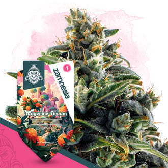

<!doctype html>
<!-- Three overview variants via ?variant= and three plant-journal variants via ?detail=. Disposable prototype, never production code. -->
<html lang="de" data-theme="dark">
<head>
  <meta charset="utf-8" />
  <meta name="viewport" content="width=device-width, initial-scale=1" />
  <title>PlantRun UI-Prototyp</title>
  <style>
    :root {
      color-scheme: dark;
      --bg: #0d120f;
      --surface: #151c17;
      --surface-2: #1b251e;
      --surface-3: #223027;
      --text: #f1f5f0;
      --muted: #9ba89d;
      --line: rgba(225, 238, 226, .11);
      --line-strong: rgba(225, 238, 226, .2);
      --accent: #79c84f;
      --accent-soft: #b8ee8e;
      --accent-ink: #10200e;
      --shadow: 0 18px 50px rgba(0, 0, 0, .3);
      font-family: Aptos, "Segoe UI", system-ui, sans-serif;
    }
    html[data-theme="light"] {
      color-scheme: light;
      --bg: #edf3ed;
      --surface: #f9fbf7;
      --surface-2: #e4eee2;
      --surface-3: #d6e5d3;
      --text: #152018;
      --muted: #68746b;
      --line: rgba(26, 47, 31, .12);
      --line-strong: rgba(26, 47, 31, .22);
      --accent: #61b53e;
      --accent-soft: #3e7c2b;
      --accent-ink: #f7fff3;
      --shadow: 0 18px 45px rgba(43, 75, 48, .13);
    }
    * { box-sizing: border-box; }
    html, body { min-width: 320px; margin: 0; background: var(--bg); color: var(--text); }
    button, textarea { font: inherit; }
    button { color: inherit; }
    button:focus-visible, textarea:focus-visible, summary:focus-visible { outline: 3px solid color-mix(in srgb, var(--accent) 52%, transparent); outline-offset: 3px; }
    .icon { width: 20px; height: 20px; fill: none; stroke: currentColor; stroke-width: 1.8; stroke-linecap: round; stroke-linejoin: round; }
    .icon.small { width: 16px; height: 16px; }
    .muted { color: var(--muted); }
    .numeral { font-variant-numeric: tabular-nums; }
    .eyebrow { margin: 0 0 7px; color: var(--muted); font-size: 11px; font-weight: 750; letter-spacing: .1em; text-transform: uppercase; }
    .prototype-copy { margin: 3px 0 0; color: var(--muted); font-size: 11px; }
    .button, .icon-button, .nav-link, .plant-card, .mini-plant, .action-choice { border: 0; cursor: pointer; }
    .button { display: inline-flex; min-height: 42px; align-items: center; justify-content: center; gap: 8px; padding: 0 16px; border-radius: 14px; background: var(--surface-2); font-weight: 720; }
    .button.primary { background: var(--accent); color: var(--accent-ink); }
    .button.outline { border: 1px solid var(--line-strong); background: transparent; }
    .button:disabled { cursor: not-allowed; opacity: .42; }
    .button.compact { min-height: 36px; padding: 0 12px; font-size: 12px; }
    .icon-button { display: grid; width: 42px; height: 42px; place-items: center; border-radius: 14px; background: var(--surface-2); }
    .header-controls { display: flex; align-items: center; gap: 8px; }
    .language { display: flex; padding: 3px; border: 1px solid var(--line-strong); border-radius: 14px; }
    .language button { min-width: 43px; height: 34px; border: 0; border-radius: 10px; background: transparent; color: var(--muted); cursor: pointer; font-weight: 700; }
    .language button.active { background: var(--surface-3); color: var(--text); }
    .flag-svg { display: inline-block; width: 18px; height: 12px; margin-right: 5px; border: 1px solid rgba(0,0,0,.22); border-radius: 1px; vertical-align: -2px; }
    .side-nav { position: sticky; top: 0; display: flex; width: 82px; height: 100vh; flex-direction: column; align-items: center; gap: 11px; padding: 18px 12px; border-right: 1px solid var(--line); background: var(--surface); }
    .brand { display: grid; width: 48px; height: 48px; margin-bottom: 22px; place-items: center; border-radius: 17px; background: var(--accent); color: var(--accent-ink); }
    .nav-link { display: grid; width: 48px; height: 48px; place-items: center; border-radius: 16px; background: transparent; color: var(--muted); }
    .nav-link.active { background: var(--surface-3); color: var(--accent-soft); }
    .nav-link.bottom { margin-top: auto; }
    .mobile-nav { display: none; }
    .page-header { display: flex; align-items: center; justify-content: space-between; gap: 24px; }
    .page-header h1 { margin: 0; font-size: clamp(27px, 3vw, 42px); letter-spacing: -.035em; }
    .page-header p:not(.prototype-copy) { margin: 6px 0 0; color: var(--muted); }
    .sensor-ribbon { display: grid; grid-template-columns: repeat(6, minmax(115px, 1fr)); gap: 8px; margin: 22px 0; }
    .sensor-pill { display: grid; grid-template-columns: 31px 1fr; gap: 9px; min-height: 64px; align-items: center; padding: 10px 12px; border: 1px solid var(--line); border-radius: 16px; background: var(--surface); }
    .sensor-icon { display: grid; width: 31px; height: 31px; place-items: center; border-radius: 10px; background: var(--surface-2); color: var(--accent-soft); }
    .sensor-pill small, .sensor-pill strong { display: block; }
    .sensor-pill small { color: var(--muted); font-size: 10px; }
    .sensor-pill strong { margin-top: 2px; font-size: 13px; }
    .breeder-label { position: absolute; z-index: 2; top: 14px; left: 14px; display: inline-flex; align-items: center; gap: 6px; padding: 6px 8px; border: 1px solid rgba(255,255,255,.25); border-radius: 4px; background: rgba(8,14,10,.76); color: #f3f6f2; font-size: 10px; font-weight: 600; }
    .status-chip { display: inline-flex; align-items: center; gap: 6px; min-height: 29px; padding: 0 10px; border-radius: 10px; background: rgba(92,156,62,.3); color: #d6ffbb; font-size: 11px; font-weight: 800; }
    .status-chip::before { width: 7px; height: 7px; border-radius: 50%; background: var(--accent); content: ""; }
    .stage-track { display: grid; grid-template-columns: repeat(4, 1fr); gap: 5px; margin-top: 13px; }
    .stage-segment { min-width: 0; }
    .stage-segment i { display: block; height: 5px; border-radius: 5px; background: var(--line-strong); }
    .stage-segment.current i { background: var(--accent); }
    .stage-segment small { display: block; overflow: hidden; margin-top: 6px; color: var(--muted); font-size: 9px; text-overflow: ellipsis; white-space: nowrap; }
    .facts { display: grid; gap: 0; margin: 0; }
    .fact { display: grid; grid-template-columns: 1fr auto; gap: 14px; padding: 10px 0; border-bottom: 1px solid var(--line); }
    .fact:last-child { border-bottom: 0; }
    .fact dt { color: var(--muted); }
    .fact dd { margin: 0; font-weight: 700; text-align: right; }

    /* A. Two equal, image-first plants - Modernized */
    .focus {
      min-height: 100vh;
      --bg: #070d09;
      --surface: #0f1912;
      --surface-2: #152219;
      --surface-3: #1d3023;
      --text: #f0f7f2;
      --muted: #8fa596;
      --line: rgba(144, 238, 144, 0.09);
      --line-strong: rgba(144, 238, 144, 0.2);
      --accent: #4ade80;
      --accent-soft: #86efac;
      --accent-ink: #07190d;
      --accent-glow: rgba(74, 222, 128, 0.25);
      --shadow: 0 16px 48px rgba(0, 0, 0, .45);
      background: var(--bg);
      color: var(--text);
    }
    html[data-theme="light"] .focus {
      --bg: #f2f7f2;
      --surface: #ffffff;
      --surface-2: #eaf2e9;
      --surface-3: #ddeadd;
      --text: #132217;
      --muted: #5e7364;
      --line: rgba(22, 54, 29, .1);
      --line-strong: rgba(22, 54, 29, .22);
      --accent: #2e9e50;
      --accent-soft: #237b3e;
      --accent-ink: #f0fbf2;
      --accent-glow: rgba(46, 158, 80, 0.2);
    }
    .focus-shell { display: grid; grid-template-columns: 82px minmax(0, 1fr); min-height: 100vh; }
    .focus .side-nav { background: var(--surface); border-right: 1px solid var(--line); }
    .focus .brand { border: 1px solid var(--line-strong); border-radius: 12px; background: var(--accent); color: var(--accent-ink); }
    .focus .nav-link { border-radius: 12px; }
    .focus .nav-link.active { background: var(--surface-3); color: var(--accent-soft); }
    .focus-main { padding: 26px clamp(24px, 3.8vw, 64px) 120px; }
    .focus .page-header h1 { font-size: clamp(28px, 2.8vw, 40px); font-weight: 750; letter-spacing: -.035em; }
    .focus .button, .focus .icon-button, .focus .language { border-radius: 10px; }
    .focus .language button { border-radius: 6px; }
    .focus .header-controls .button.primary { border: 0; background: var(--accent); color: var(--accent-ink); font-weight: 720; }

    /* Zone badge styling */
    .zone-badge { display: inline-flex; align-items: center; gap: 5px; font-size: 10.5px; font-weight: 700; padding: 2.5px 8px; border-radius: 6px; line-height: 1.2; }
    .zone-badge.good { background: rgba(52, 211, 153, 0.12); color: #34d399; border: 1px solid rgba(52, 211, 153, 0.28); }
    .zone-badge.warn { background: rgba(251, 191, 36, 0.12); color: #fbbf24; border: 1px solid rgba(251, 191, 36, 0.28); }
    .zone-badge.bad { background: rgba(248, 113, 113, 0.12); color: #f87171; border: 1px solid rgba(248, 113, 113, 0.28); }
    .zone-badge.neutral { background: rgba(255, 255, 255, 0.06); color: var(--muted); border: 1px solid var(--line); }
    .zone-dot { width: 5px; height: 5px; border-radius: 50%; background: currentColor; }

    /* Range Gauge Bar */
    .range-gauge-wrap { display: flex; flex-direction: column; gap: 4px; width: 100%; margin-top: 5px; }
    .range-gauge-track { position: relative; width: 100%; height: 5px; border-radius: 5px; background: rgba(255, 255, 255, 0.08); overflow: visible; }
    html[data-theme="light"] .range-gauge-track { background: rgba(0, 0, 0, 0.08); }
    .range-gauge-zone { position: absolute; top: 0; bottom: 0; background: linear-gradient(90deg, rgba(52, 211, 153, 0.35), rgba(74, 222, 128, 0.65)); border-radius: 3px; }
    .range-gauge-needle { position: absolute; top: 50%; transform: translate(-50%, -50%); width: 10px; height: 10px; display: grid; place-items: center; z-index: 2; }
    .range-needle-dot { width: 7px; height: 7px; border-radius: 50%; background: #ffffff; border: 1.5px solid #10b981; box-shadow: 0 0 5px rgba(255, 255, 255, 0.85); }
    .range-gauge-labels { display: flex; justify-content: space-between; align-items: center; font-size: 9px; color: var(--muted); }
    .range-target-label { color: #34d399; font-weight: 600; }
    html[data-theme="light"] .range-target-label { color: #15803d; }

    /* Stage lifecycle progress bar */
    .stage-timeline { display: grid; grid-template-columns: repeat(5, 1fr); gap: 6px; margin: 12px 0; }
    .stage-step { display: flex; flex-direction: column; gap: 4px; }
    .stage-step-bar { height: 4px; border-radius: 3px; background: var(--line-strong); }
    .stage-step.done .stage-step-bar { background: rgba(74, 222, 128, 0.6); }
    .stage-step.active .stage-step-bar { background: var(--accent); box-shadow: 0 0 8px var(--accent-glow); }
    .stage-step small { font-size: 9.5px; color: var(--muted); white-space: nowrap; overflow: hidden; text-overflow: ellipsis; }
    .stage-step.active small { color: var(--text); font-weight: 700; }

    /* Modern Tent Sensor Cards */
    .modern-sensor-grid { display: grid; grid-template-columns: repeat(5, minmax(0, 1fr)); gap: 12px; margin: 20px 0 28px; }
    .sensor-card { background: var(--surface); border: 1px solid var(--line); border-radius: 16px; padding: 14px 16px; display: flex; flex-direction: column; gap: 8px; transition: border-color .2s, transform .2s; }
    .sensor-card:hover { border-color: var(--line-strong); transform: translateY(-1px); }
    .sensor-card-head { display: flex; align-items: center; justify-content: space-between; }
    .sensor-card-title { display: flex; align-items: center; gap: 7px; color: var(--muted); font-size: 11.5px; font-weight: 600; }
    .sensor-card-icon { width: 26px; height: 26px; border-radius: 7px; background: var(--surface-2); color: var(--accent-soft); display: grid; place-items: center; }
    .sensor-card-val { font-size: 21px; font-weight: 750; letter-spacing: -.02em; color: var(--text); line-height: 1.1; margin: 2px 0 0; }
    .sensor-card-sub { font-size: 10px; color: var(--muted); display: flex; justify-content: space-between; align-items: center; margin-top: 2px; }

    /* Modern Layout */
    .focus-plants { display: grid; grid-template-columns: repeat(auto-fit, minmax(420px, 1fr)); gap: 20px; width: 100%; }

    /* Modern Plant Cards */
    .modern-plant-card { background: var(--surface); border: 1px solid var(--line); border-radius: 20px; padding: 20px; display: flex; flex-direction: column; gap: 14px; box-shadow: var(--shadow); position: relative; transition: border-color .2s; }
    .modern-plant-card:hover { border-color: var(--line-strong); }
    .plant-card-header { display: grid; grid-template-columns: 116px 1fr; gap: 16px; align-items: start; }
    .plant-thumb-wrap { position: relative; width: 116px; height: 116px; border-radius: 14px; overflow: hidden; background: var(--surface-2); }
    .plant-thumb-wrap img { width: 100%; height: 100%; object-fit: cover; }
    .plant-breeder-tag { position: absolute; bottom: 5px; left: 5px; right: 5px; padding: 2px 5px; border-radius: 5px; background: rgba(5, 12, 7, 0.85); backdrop-filter: blur(4px); color: #d1fae5; font-size: 9px; font-weight: 700; text-align: center; border: 1px solid rgba(255, 255, 255, 0.15); white-space: nowrap; overflow: hidden; text-overflow: ellipsis; }
    .plant-info-block { display: flex; flex-direction: column; gap: 5px; min-width: 0; }
    .plant-stage-badge { display: inline-flex; align-items: center; gap: 5px; padding: 3px 8px; border-radius: 6px; background: rgba(52, 211, 153, 0.12); color: #34d399; border: 1px solid rgba(52, 211, 153, 0.28); font-size: 10.5px; font-weight: 750; width: fit-content; }
    .pulse-dot { width: 6px; height: 6px; border-radius: 50%; background: #34d399; box-shadow: 0 0 6px #34d399; }
    .plant-info-block h2 { margin: 0; font-size: 21px; font-weight: 750; letter-spacing: -.025em; color: var(--text); }
    .plant-genetics-sub { color: var(--muted); font-size: 11.5px; margin: 0; line-height: 1.35; }
    .plant-harvest-pill { display: inline-flex; align-items: center; gap: 5px; padding: 3px 8px; border-radius: 6px; background: var(--surface-2); color: var(--muted); font-size: 10.5px; width: fit-content; margin-top: 2px; }
    .plant-harvest-pill strong { color: var(--text); }

    /* Plant Telemetry 3-col Grid */
    .plant-telemetry-grid { display: grid; grid-template-columns: repeat(3, 1fr); gap: 8px; padding: 12px; background: var(--surface-2); border-radius: 12px; border: 1px solid var(--line); }
    .telemetry-cell { display: flex; flex-direction: column; gap: 4px; }
    .telemetry-cell-head { display: flex; align-items: center; justify-content: space-between; color: var(--muted); font-size: 10.5px; font-weight: 600; }
    .telemetry-cell-val { font-size: 17px; font-weight: 750; color: var(--text); line-height: 1.1; }

    /* Card Bottom Action Bar */
    .plant-card-foot { display: flex; align-items: center; justify-content: space-between; gap: 12px; padding-top: 6px; border-top: 1px solid var(--line); }
    .plant-care-status { display: flex; align-items: center; gap: 6px; color: var(--muted); font-size: 11px; }
    .plant-card-actions { display: flex; align-items: center; gap: 8px; }
    .plant-card-actions .button.primary { min-height: 34px; padding: 0 12px; font-size: 12px; }
    .plant-card-actions .button.outline { min-height: 34px; padding: 0 10px; font-size: 12px; }

    .today-panel { align-self: start; padding: 18px; border: 1px solid var(--line); border-radius: 18px; background: var(--surface); }
    .today-panel h2 { margin: 0 0 12px; font-size: 17px; font-weight: 700; }
    .today-item { display: grid; grid-template-columns: 34px 1fr; gap: 10px; padding: 12px 0; border-bottom: 1px solid var(--line); }
    .today-item:last-of-type { border-bottom: 0; }
    .today-icon { display: grid; width: 34px; height: 34px; place-items: center; border-radius: 8px; background: var(--surface-2); color: var(--accent-soft); }
    .today-item strong { font-size: 12px; font-weight: 650; display: block; }
    .today-item small { margin-top: 2px; color: var(--muted); line-height: 1.3; display: block; font-size: 10.5px; }

    /* B. One selected plant becomes the workspace. */
    .workspace { min-height: 100vh; background: var(--bg); }
    .workspace-top { display: flex; height: 78px; align-items: center; justify-content: space-between; gap: 20px; padding: 0 clamp(20px, 4vw, 62px); border-bottom: 1px solid var(--line); background: var(--surface); }
    .workspace-brand { display: flex; align-items: center; gap: 12px; font-size: 18px; font-weight: 820; }
    .workspace-brand .brand { width: 42px; height: 42px; margin: 0; border-radius: 14px; }
    .workspace-links { display: flex; align-items: center; gap: 5px; }
    .workspace-link { min-height: 38px; padding: 0 12px; border: 0; border-radius: 11px; background: transparent; color: var(--muted); cursor: pointer; }
    .workspace-link.active { background: var(--surface-2); color: var(--text); font-weight: 750; }
    .workspace-main { max-width: 1500px; margin: 0 auto; padding: 24px clamp(20px, 4vw, 62px) 120px; }
    .workspace-heading { display: flex; align-items: end; justify-content: space-between; gap: 20px; margin-bottom: 20px; }
    .workspace-heading h1 { margin: 0; font-size: clamp(28px, 3vw, 44px); letter-spacing: -.04em; }
    .workspace-heading p { margin: 6px 0 0; color: var(--muted); }
    .workspace-grid { display: grid; grid-template-columns: minmax(420px, 1.25fr) minmax(330px, .75fr); gap: 18px; }
    .workspace-hero { position: relative; min-height: 610px; overflow: hidden; border-radius: 30px; background: var(--surface-2); box-shadow: var(--shadow); }
    .workspace-hero img { position: absolute; width: 100%; height: 100%; object-fit: cover; }
    .workspace-hero::after { position: absolute; inset: 38% 0 0; background: linear-gradient(transparent, rgba(5,10,6,.92)); content: ""; }
    .workspace-hero-copy { position: absolute; z-index: 2; right: 26px; bottom: 25px; left: 26px; color: white; }
    .workspace-hero-copy h2 { margin: 9px 0 5px; font-size: clamp(28px, 3vw, 45px); letter-spacing: -.045em; }
    .workspace-hero-copy p { margin: 0; color: rgba(255,255,255,.7); }
    .workspace-hero-copy .stage-track { max-width: 560px; margin-top: 22px; }
    .workspace-hero-copy .stage-segment small { color: rgba(255,255,255,.62); }
    .workspace-detail { display: grid; gap: 14px; align-content: start; }
    .workspace-card { padding: 19px; border: 1px solid var(--line); border-radius: 22px; background: var(--surface); }
    .workspace-card h3 { margin: 0 0 11px; font-size: 15px; }
    .mini-plant { display: grid; width: 100%; grid-template-columns: 76px 1fr auto; gap: 12px; align-items: center; padding: 9px; border-radius: 17px; background: var(--surface-2); text-align: left; }
    .mini-plant img { width: 76px; height: 76px; border-radius: 13px; object-fit: cover; }
    .mini-plant strong, .mini-plant small { display: block; }
    .mini-plant small { margin-top: 4px; color: var(--muted); }
    .mini-journal { display: grid; grid-template-columns: 70px 1fr; gap: 10px; padding: 10px 0; border-top: 1px solid var(--line); }
    .mini-journal time { color: var(--muted); font-size: 10px; }
    .mini-journal p { margin: 0; font-size: 12px; line-height: 1.4; }
    .workspace-actions { display: grid; grid-template-columns: 1fr 1fr; gap: 8px; }

    /* C. Plant gallery plus the day feed. */
    .daily { min-height: 100vh; background: var(--bg); }
    .daily-shell { display: grid; grid-template-columns: 82px minmax(0, 1fr); min-height: 100vh; }
    .daily-main { padding: 26px clamp(20px, 3.2vw, 50px) 120px; }
    .daily-grid { display: grid; grid-template-columns: minmax(520px, 1.15fr) minmax(320px, .65fr); gap: 18px; margin-top: 22px; }
    .daily-gallery { display: grid; grid-template-columns: 1fr 1fr; gap: 14px; }
    .daily-plant { position: relative; min-height: 540px; overflow: hidden; border-radius: 27px; background: var(--surface); box-shadow: var(--shadow); }
    .daily-plant img { width: 100%; height: 100%; object-fit: cover; }
    .daily-plant::after { position: absolute; inset: 34% 0 0; background: linear-gradient(transparent, rgba(7,12,8,.9)); content: ""; }
    .daily-plant-copy { position: absolute; z-index: 2; right: 18px; bottom: 18px; left: 18px; color: white; }
    .daily-plant-copy h2 { margin: 8px 0 4px; font-size: clamp(20px, 2vw, 28px); }
    .daily-plant-copy p { margin: 0 0 15px; color: rgba(255,255,255,.7); font-size: 11px; }
    .daily-plant-readings { display: grid; grid-template-columns: 1fr 1fr; gap: 7px; }
    .daily-reading { padding: 9px; border-radius: 12px; background: rgba(17,26,19,.72); backdrop-filter: blur(8px); }
    .daily-reading small, .daily-reading strong { display: block; }
    .daily-reading small { color: rgba(255,255,255,.62); font-size: 9px; }
    .daily-reading strong { margin-top: 3px; font-size: 11px; }
    .daily-card-action { position: absolute; z-index: 3; top: 14px; right: 14px; background: rgba(9,15,10,.72); color: white; backdrop-filter: blur(8px); }
    .day-feed { align-self: start; overflow: hidden; border: 1px solid var(--line); border-radius: 24px; background: var(--surface); }
    .day-feed-head { display: flex; align-items: center; justify-content: space-between; padding: 18px; border-bottom: 1px solid var(--line); }
    .day-feed-head h2 { margin: 0; font-size: 18px; }
    .feed-item { display: grid; grid-template-columns: 50px 1fr; gap: 12px; padding: 16px 18px; border-bottom: 1px solid var(--line); }
    .feed-item:last-child { border-bottom: 0; }
    .feed-time { color: var(--muted); font-size: 10px; font-weight: 750; }
    .feed-item h3 { margin: 0 0 4px; font-size: 13px; }
    .feed-item p { margin: 0; color: var(--muted); font-size: 11px; line-height: 1.4; }
    .feed-item.task { background: color-mix(in srgb, var(--accent) 7%, var(--surface)); }
    .daily .sensor-ribbon { grid-column: 1 / -1; margin: 0; }

    /* Plant detail question: where should daily capture live? Three structural answers. */
    .plant-view { min-height: 100vh; background: var(--bg); color: var(--text); }
    .plant-view .side-nav { background: transparent; }
    .plant-view .brand { border: 1px solid var(--line-strong); border-radius: 5px; background: transparent; color: var(--accent-soft); }
    .plant-view .nav-link { border-radius: 0; background: transparent; }
    .plant-view .nav-link.active { box-shadow: inset 2px 0 var(--accent); color: var(--text); }
    .plant-detail-main { min-width: 0; padding: 22px clamp(22px, 3.6vw, 58px) 120px; }
    .detail-header { display: grid; grid-template-columns: 1fr auto; gap: 24px; align-items: end; padding-bottom: 22px; border-bottom: 1px solid var(--line); }
    .detail-back { display: inline-flex; align-items: center; gap: 7px; margin: 0 0 18px; padding: 0; border: 0; background: transparent; color: var(--muted); cursor: pointer; font-size: 12px; }
    .detail-back:hover { color: var(--text); }
    .detail-title-row { display: flex; align-items: baseline; gap: 12px; }
    .detail-title-row h1 { margin: 0; font-size: clamp(28px, 3.2vw, 43px); font-weight: 620; letter-spacing: -.035em; }
    .detail-title-row span { color: var(--muted); font-size: 13px; }
    .detail-subline { display: flex; flex-wrap: wrap; gap: 7px 18px; margin: 8px 0 0; color: var(--muted); font-size: 12px; }
    .detail-subline strong { color: var(--accent-soft); font-weight: 600; }
    .detail-tabs { display: flex; gap: 22px; margin: 0 0 26px; border-bottom: 1px solid var(--line); }
    .detail-tab { padding: 15px 0 12px; border: 0; border-bottom: 2px solid transparent; background: transparent; color: var(--muted); cursor: pointer; font-size: 12px; }
    .detail-tab.active { border-bottom-color: var(--text); color: var(--text); }
    .detail-photo { position: relative; overflow: hidden; background: var(--surface); }
    .detail-photo img { width: 100%; height: 100%; object-fit: contain; }
    html[data-theme="light"] .plant-view .detail-photo img { mix-blend-mode: multiply; }
    .detail-section-head { display: flex; align-items: end; justify-content: space-between; gap: 18px; margin-bottom: 13px; }
    .detail-section-head h2 { margin: 0; font-size: 18px; font-weight: 620; }
    .detail-section-head p { margin: 4px 0 0; color: var(--muted); font-size: 11px; }
    .detail-link { padding: 0; border: 0; border-bottom: 1px solid var(--line-strong); background: transparent; color: var(--muted); cursor: pointer; font-size: 11px; }
    .quick-composer { border-top: 1px solid var(--line-strong); border-bottom: 1px solid var(--line-strong); }
    .composer-types { display: flex; gap: 18px; border-bottom: 1px solid var(--line); }
    .composer-type { display: inline-flex; align-items: center; gap: 7px; padding: 11px 0 9px; border: 0; border-bottom: 2px solid transparent; background: transparent; color: var(--muted); cursor: pointer; font-size: 11px; }
    .composer-type.active { border-bottom-color: var(--accent); color: var(--text); }
    .composer-type .icon { width: 16px; height: 16px; }
    .quick-composer textarea { display: block; width: 100%; min-height: 116px; resize: vertical; padding: 15px 0; border: 0; background: transparent; color: var(--text); line-height: 1.5; }
    .quick-composer textarea:focus { outline: 0; }
    .composer-foot { display: flex; align-items: center; justify-content: space-between; gap: 12px; padding: 10px 0; border-top: 1px solid var(--line); }
    .composer-time { border: 0; background: transparent; color: var(--muted); font-size: 11px; color-scheme: dark; }
    html[data-theme="light"] .composer-time { color-scheme: light; }
    .composer-save { min-height: 34px; padding: 0 13px; border: 1px solid var(--line-strong); border-radius: 4px; background: transparent; color: var(--text); cursor: pointer; font-weight: 600; }
    .timeline { margin-top: 24px; }
    .timeline-entry { display: grid; grid-template-columns: 86px minmax(0, 1fr); gap: 18px; padding: 15px 0; border-top: 1px solid var(--line); }
    .timeline-entry time { color: var(--muted); font-size: 10px; line-height: 1.45; }
    .timeline-entry h3 { margin: 0 0 5px; font-size: 12px; font-weight: 620; }
    .timeline-entry p { margin: 0; line-height: 1.5; }
    .timeline-context { display: block; margin-top: 7px; color: var(--muted); font-size: 10px; }
    .empty-journal { padding: 22px 0; border-top: 1px solid var(--line); color: var(--muted); font-size: 12px; }
    .metric-list { border-top: 1px solid var(--line); }
    .metric-row { display: grid; grid-template-columns: 1fr auto; gap: 12px; padding: 10px 0; border-bottom: 1px solid var(--line); }
    .metric-row span { color: var(--muted); font-size: 11px; }
    .metric-row strong { font-size: 12px; font-weight: 600; }
    .next-block { margin-top: 25px; padding-top: 18px; border-top: 1px solid var(--line-strong); }
    .next-block h3 { margin: 5px 0; font-size: 15px; font-weight: 620; }
    .next-block p { margin: 0; color: var(--muted); font-size: 11px; line-height: 1.45; }

    .detail-a { display: grid; grid-template-columns: minmax(230px, .72fr) minmax(360px, 1.24fr) minmax(220px, .62fr); gap: 0; }
    .detail-a > section, .detail-a > aside { min-width: 0; padding: 0 28px; border-right: 1px solid var(--line); }
    .detail-a > :first-child { padding-left: 0; }
    .detail-a > :last-child { padding-right: 0; border-right: 0; }
    .detail-a .detail-photo { height: 325px; margin-bottom: 18px; }
    .detail-a .facts .fact { grid-template-columns: 1fr; gap: 4px; }
    .detail-a .fact dd { text-align: left; }

    .detail-b-masthead { display: grid; grid-template-columns: 280px minmax(0, 1fr); min-height: 210px; margin-bottom: 28px; border-bottom: 1px solid var(--line-strong); }
    .detail-b-masthead .detail-photo { height: 210px; }
    .masthead-copy { display: grid; grid-template-columns: minmax(0, 1fr) minmax(260px, .65fr); gap: 32px; align-items: center; padding: 24px 0 24px 32px; }
    .masthead-copy h2 { margin: 0 0 12px; font-size: 23px; font-weight: 620; }
    .detail-b .quick-composer { display: grid; grid-template-columns: 145px minmax(0, 1fr) 190px; align-items: stretch; margin-bottom: 26px; }
    .detail-b .composer-types { flex-direction: column; gap: 0; padding: 8px 18px 8px 0; border-right: 1px solid var(--line); border-bottom: 0; }
    .detail-b .composer-type { border-bottom: 0; border-left: 2px solid transparent; padding: 8px 10px; }
    .detail-b .composer-type.active { border-left-color: var(--accent); }
    .detail-b .quick-composer textarea { min-height: 94px; padding: 14px 18px; }
    .detail-b .composer-foot { flex-direction: column; align-items: stretch; justify-content: center; padding: 12px 0 12px 18px; border-top: 0; border-left: 1px solid var(--line); }
    .ledger-head, .ledger-row { display: grid; grid-template-columns: 125px 130px minmax(260px, 1fr) 210px; gap: 16px; }
    .ledger-head { padding: 9px 0; border-bottom: 1px solid var(--line-strong); color: var(--muted); font-size: 10px; text-transform: uppercase; letter-spacing: .06em; }
    .ledger-row { padding: 15px 0; border-bottom: 1px solid var(--line); font-size: 12px; }
    .ledger-row time, .ledger-row .ledger-context { color: var(--muted); }
    .ledger-empty { padding: 28px 0; border-bottom: 1px solid var(--line); color: var(--muted); font-size: 12px; }

    .detail-c { display: grid; grid-template-columns: minmax(390px, .88fr) minmax(450px, 1.12fr); min-height: 680px; }
    .detail-c-visual { position: sticky; top: 0; align-self: start; padding-right: 34px; border-right: 1px solid var(--line); }
    .detail-c .detail-photo { height: 475px; }
    .visual-caption { display: grid; grid-template-columns: 1fr 1fr; gap: 0; border-bottom: 1px solid var(--line); }
    .visual-caption span { padding: 12px 0; }
    .visual-caption span + span { padding-left: 16px; border-left: 1px solid var(--line); }
    .visual-caption small, .visual-caption strong { display: block; }
    .visual-caption small { color: var(--muted); font-size: 9px; }
    .visual-caption strong { margin-top: 4px; font-size: 12px; font-weight: 600; }
    .detail-c-work { padding-left: 34px; }
    .detail-c .quick-composer textarea { min-height: 170px; font-size: 17px; }
    .detail-c .metric-list { display: grid; grid-template-columns: repeat(3, 1fr); margin: 28px 0; }
    .detail-c .metric-row { grid-template-columns: 1fr; gap: 4px; padding: 10px 14px; border-right: 1px solid var(--line); }
    .detail-c .metric-row:first-child { padding-left: 0; }
    .detail-c .metric-row:last-child { border-right: 0; }

    /* Visual plant record. Charts and development lead, journal recedes. */
    .visual-detail { display: grid; gap: 28px; }
    .visual-kicker { margin: 0 0 7px; color: var(--muted); font-size: 10px; letter-spacing: .08em; text-transform: uppercase; }
    .visual-detail h2, .visual-detail h3 { font-weight: 620; }
    .visual-facts { display: grid; grid-template-columns: repeat(4, 1fr); border-top: 1px solid var(--line); border-bottom: 1px solid var(--line); }
    .visual-fact { min-width: 0; padding: 13px 18px; border-right: 1px solid var(--line); }
    .visual-fact:first-child { padding-left: 0; }
    .visual-fact:last-child { border-right: 0; }
    .visual-fact small, .visual-fact strong { display: block; }
    .visual-fact small { color: var(--muted); font-size: 9px; }
    .visual-fact strong { overflow: hidden; margin-top: 5px; font-size: 12px; font-weight: 600; text-overflow: ellipsis; white-space: nowrap; }
    .progress-visual { padding: 21px 0 18px; border-top: 1px solid var(--line-strong); border-bottom: 1px solid var(--line-strong); }
    .progress-numbers { display: flex; align-items: end; justify-content: space-between; gap: 24px; margin-bottom: 19px; }
    .progress-day { font-size: clamp(40px, 5vw, 68px); font-weight: 560; letter-spacing: -.055em; line-height: .95; }
    .progress-estimate { text-align: right; }
    .progress-estimate strong, .progress-estimate small { display: block; }
    .progress-estimate strong { font-size: 16px; font-weight: 600; }
    .progress-estimate small { margin-top: 4px; color: var(--muted); font-size: 10px; }
    .growth-line { position: relative; height: 3px; margin: 15px 0 10px; background: var(--line-strong); }
    .growth-line span { position: absolute; inset: 0 auto 0 0; min-width: 8px; background: var(--accent); }
    .growth-line i { position: absolute; top: 50%; width: 7px; height: 7px; transform: translate(-50%,-50%); border: 1px solid var(--muted); border-radius: 50%; background: var(--bg); }
    .growth-line i.current { border-color: var(--accent); background: var(--accent); }
    .growth-labels { display: grid; grid-template-columns: repeat(4, 1fr); color: var(--muted); font-size: 9px; }
    .growth-labels span:nth-child(2), .growth-labels span:nth-child(3) { text-align: center; }
    .growth-labels span:last-child { text-align: right; }
    .trend-panel { min-width: 0; padding: 0 0 16px; border-bottom: 1px solid var(--line); }
    .trend-head { display: flex; align-items: end; justify-content: space-between; gap: 14px; margin-bottom: 8px; }
    .trend-head h3 { margin: 0; font-size: 13px; }
    .trend-value { text-align: right; }
    .trend-value strong { display: block; font-size: 22px; font-weight: 560; letter-spacing: -.03em; }
    .trend-value strong { white-space: nowrap; }
    .trend-value small { color: var(--muted); font-size: 9px; }
    .chart-svg { display: block; width: 100%; height: 170px; overflow: visible; color: var(--accent-soft); }
    .chart-svg.tall { height: 240px; }
    .chart-gridline { stroke: var(--line); stroke-width: 1; vector-effect: non-scaling-stroke; }
    .chart-area { fill: color-mix(in srgb, var(--accent) 10%, transparent); }
    .chart-line { fill: none; stroke: currentColor; stroke-width: 2; vector-effect: non-scaling-stroke; }
    .chart-line.secondary { stroke: #9aabc0; stroke-width: 1.5; }
    .chart-dot { fill: var(--bg); stroke: currentColor; stroke-width: 2; vector-effect: non-scaling-stroke; }
    .chart-labels { display: flex; justify-content: space-between; margin-top: 3px; color: var(--muted); font-size: 9px; }
    .chart-legend { display: flex; flex-wrap: wrap; gap: 13px; margin-top: 7px; color: var(--muted); font-size: 9px; }
    .chart-legend span::before { display: inline-block; width: 14px; height: 2px; margin-right: 5px; background: var(--accent-soft); vertical-align: 3px; content: ""; }
    .chart-legend span.secondary::before { background: #9aabc0; }
    .trend-stats { display: flex; gap: 18px; margin-top: 10px; color: var(--muted); font-size: 9px; }
    .trend-stats strong { margin-left: 4px; color: var(--text); font-weight: 600; }
    .compact-journal { display: grid; grid-template-columns: 110px minmax(0, 1fr) auto; gap: 18px; align-items: center; padding: 14px 0; border-top: 1px solid var(--line-strong); border-bottom: 1px solid var(--line-strong); }
    .compact-journal h3, .compact-journal p { margin: 0; }
    .compact-journal h3 { font-size: 12px; }
    .compact-journal p { overflow: hidden; color: var(--muted); font-size: 11px; text-overflow: ellipsis; white-space: nowrap; }
    .compact-journal .button { min-height: 34px; border-radius: 4px; background: transparent; font-size: 11px; }

    .telemetry-hero { display: grid; grid-template-columns: minmax(270px, .72fr) minmax(400px, 1.28fr); gap: 34px; align-items: stretch; }
    .telemetry-photo { height: 365px; }
    .telemetry-summary { display: grid; align-content: space-between; }
    .telemetry-grid { display: grid; grid-template-columns: minmax(0, 1.4fr) minmax(250px, .6fr); gap: 30px; }
    .telemetry-side { display: grid; gap: 25px; align-content: start; }
    .telemetry-side .chart-svg { height: 112px; }
    .numeric-strip { display: grid; grid-template-columns: repeat(3, 1fr); border-top: 1px solid var(--line); border-bottom: 1px solid var(--line); }
    .numeric-cell { padding: 13px; border-right: 1px solid var(--line); }
    .numeric-cell:first-child { padding-left: 0; }
    .numeric-cell:last-child { border-right: 0; }
    .numeric-cell small, .numeric-cell strong { display: block; }
    .numeric-cell small { color: var(--muted); font-size: 9px; }
    .numeric-cell strong { margin-top: 6px; font-size: 18px; font-weight: 560; }

    .development-overview { display: grid; grid-template-columns: 230px minmax(0, 1fr); gap: 34px; }
    .development-photo { height: 260px; }
    .development-map { position: relative; padding: 28px 0 8px; }
    .development-axis { position: relative; height: 2px; margin: 24px 0 14px; background: var(--line-strong); }
    .development-axis::before { position: absolute; inset: 0 98% 0 0; background: var(--accent); content: ""; }
    .development-point { position: absolute; top: 50%; transform: translate(-50%,-50%); }
    .development-point i { display: block; width: 11px; height: 11px; border: 2px solid var(--bg); border-radius: 50%; background: var(--muted); box-shadow: 0 0 0 1px var(--line-strong); }
    .development-point.current i { background: var(--accent); }
    .development-point span { position: absolute; top: 18px; left: 50%; transform: translateX(-50%); color: var(--muted); font-size: 9px; white-space: nowrap; }
    .development-chart { display: grid; grid-template-columns: minmax(0, 1fr) 240px; gap: 30px; }
    .development-facts { border-left: 1px solid var(--line); padding-left: 24px; }
    .development-facts h3 { margin: 0 0 10px; font-size: 13px; }
    .reported-fact { padding: 11px 0; border-bottom: 1px solid var(--line); }
    .reported-fact small, .reported-fact strong { display: block; }
    .reported-fact small { color: var(--muted); font-size: 9px; }
    .reported-fact strong { margin-top: 4px; font-size: 12px; font-weight: 600; }

    .plant-focus-grid { display: grid; grid-template-columns: minmax(430px, .95fr) minmax(440px, 1.05fr); gap: 0; }
    .plant-focus-visual { padding-right: 34px; border-right: 1px solid var(--line); }
    .plant-focus-photo { height: 560px; }
    .plant-focus-data { padding-left: 34px; }
    .plant-focus-data .progress-visual { margin-bottom: 28px; }
    .plant-focus-chart-row { display: grid; grid-template-columns: 1fr 1fr; gap: 24px; }
    .plant-focus-chart-row .chart-svg { height: 105px; }

    /* B revision: one calm hierarchy, one graph at a time. */
    .clean-b {
      --clean-radius: 24px;
      --bg: #f1f4ef;
      --surface: #fbfcfa;
      --surface-2: #e9eee6;
      --surface-3: #dfe7dc;
      --text: #171c18;
      --muted: #6d756e;
      --line: rgba(25,35,27,.08);
      --line-strong: rgba(25,35,27,.15);
      --accent: #6ab84d;
      --accent-soft: #4b8138;
      --accent-ink: #f8fff4;
    }
    html[data-theme="dark"] .clean-b {
      --bg: #111311;
      --surface: #1b1e1b;
      --surface-2: #252925;
      --surface-3: #2d322d;
      --text: #f0f2ed;
      --muted: #989f98;
      --line: rgba(238,244,236,.075);
      --line-strong: rgba(238,244,236,.15);
      --accent: #8abd70;
      --accent-soft: #b1cfa2;
      --accent-ink: #11160f;
    }
    .clean-b .plant-detail-main { width: min(1320px, 100%); margin: 0 auto; padding-top: 18px; }
    .clean-header { display: flex; align-items: center; justify-content: space-between; gap: 20px; min-height: 52px; margin-bottom: 22px; }
    .clean-header .detail-back { margin: 0; }
    .clean-header .button, .clean-header .icon-button, .clean-header .language { border-radius: 12px; }
    .clean-header .header-controls .button.primary { border: 0; background: var(--accent); color: var(--accent-ink); }
    .clean-hero { display: grid; grid-template-columns: minmax(280px, .72fr) minmax(470px, 1.28fr); gap: 0; overflow: hidden; border-radius: var(--clean-radius); background: var(--surface); }
    .clean-photo { height: 350px; background: color-mix(in srgb, var(--surface-2) 74%, var(--bg)); }
    .clean-photo img { object-fit: cover; object-position: center; }
    .clean-hero-copy { display: grid; align-content: space-between; min-width: 0; padding: 30px 34px 25px; }
    .clean-status { display: inline-flex; align-items: center; gap: 7px; color: var(--accent-soft); font-size: 11px; font-weight: 600; }
    .clean-status::before { width: 7px; height: 7px; border-radius: 50%; background: var(--accent); content: ""; }
    .clean-heading { display: grid; grid-template-columns: minmax(0, 1fr) auto; gap: 22px; align-items: start; }
    .clean-overall-health { display: flex; align-items: center; gap: 11px; padding: 7px 9px 7px 7px; border-radius: 15px; background: var(--surface-2); }
    .clean-health-ring { display: grid; width: 48px; height: 48px; place-items: center; border-radius: 50%; background: conic-gradient(var(--accent) 0 72%, #d3a833 72% 82%, var(--line-strong) 82% 100%); }
    .clean-health-ring::before { grid-area: 1 / 1; width: 35px; height: 35px; border-radius: 50%; background: var(--surface-2); content: ""; }
    .clean-health-ring strong { z-index: 1; grid-area: 1 / 1; font-size: 10px; font-weight: 650; }
    .clean-health-copy strong, .clean-health-copy small { display: block; }
    .clean-health-copy strong { font-size: 10px; font-weight: 600; }
    .clean-health-copy small { margin-top: 3px; color: #d9b650; font-size: 8px; }
    .clean-hero h1 { margin: 9px 0 5px; font-size: clamp(31px, 3.8vw, 53px); font-weight: 590; letter-spacing: -.045em; }
    .clean-breeder { margin: 0; color: var(--muted); font-size: 12px; }
    .clean-progress-head { display: flex; align-items: end; justify-content: space-between; gap: 20px; margin: 27px 0 14px; }
    .clean-day strong, .clean-day small, .clean-harvest strong, .clean-harvest small { display: block; }
    .clean-day strong { font-size: 25px; font-weight: 580; }
    .clean-day small, .clean-harvest small { margin-top: 3px; color: var(--muted); font-size: 9px; }
    .clean-harvest { text-align: right; }
    .clean-harvest strong { font-size: 16px; font-weight: 600; }
    .clean-stage-line { position: relative; display: grid; grid-template-columns: repeat(4, 1fr); margin: 13px 0 24px; }
    .clean-stage-line::before { position: absolute; top: 5px; right: 0; left: 0; height: 2px; background: var(--line-strong); content: ""; }
    .clean-stage { position: relative; z-index: 1; color: var(--muted); font-size: 9px; }
    .clean-stage::before { display: block; width: 11px; height: 11px; margin-bottom: 8px; border: 2px solid var(--surface); border-radius: 50%; background: #667068; box-shadow: 0 0 0 1px var(--line-strong); content: ""; }
    .clean-stage.current { color: var(--text); }
    .clean-stage.current::before { background: var(--accent); box-shadow: 0 0 0 2px color-mix(in srgb, var(--accent) 28%, transparent); }
    .clean-stage:nth-child(2), .clean-stage:nth-child(3) { text-align: center; }
    .clean-stage:nth-child(2)::before, .clean-stage:nth-child(3)::before { margin-right: auto; margin-left: auto; }
    .clean-stage:last-child { text-align: right; }
    .clean-stage:last-child::before { margin-left: auto; }
    .clean-quick-stats { display: grid; grid-template-columns: repeat(3, 1fr); overflow: hidden; border-radius: 16px; background: var(--surface-2); }
    .clean-quick-stat { padding: 14px 16px; }
    .clean-quick-stat + .clean-quick-stat { border-left: 1px solid var(--line); }
    .clean-quick-stat small, .clean-quick-stat strong { display: block; }
    .clean-quick-stat small { color: var(--muted); font-size: 9px; }
    .clean-quick-stat strong { margin-top: 5px; font-size: 15px; font-weight: 600; }
    .clean-content { display: grid; grid-template-columns: minmax(0, 1.55fr) minmax(270px, .45fr); gap: 18px; align-items: stretch; margin-top: 18px; }
    .clean-chart-panel, .clean-facts-panel { min-width: 0; border-radius: var(--clean-radius); background: var(--surface); }
    .clean-chart-panel { padding: 24px 26px 20px; }
    .clean-chart-title { display: flex; align-items: start; justify-content: space-between; gap: 18px; }
    .clean-chart-title h2 { margin: 4px 0 0; font-size: 19px; font-weight: 600; }
    .clean-chart-title strong { font-size: 28px; font-weight: 560; letter-spacing: -.035em; white-space: nowrap; }
    .clean-metric-tabs { display: grid; grid-template-columns: repeat(4, 1fr); gap: 7px; margin: 20px 0 12px; }
    .clean-metric-tab { min-width: 0; padding: 10px 9px; border: 0; border-radius: 11px; background: var(--surface-2); color: var(--muted); cursor: pointer; text-align: left; }
    .clean-metric-tab small, .clean-metric-tab strong { display: block; overflow: hidden; text-overflow: ellipsis; white-space: nowrap; }
    .clean-metric-tab small { font-size: 8px; }
    .clean-metric-tab strong { margin-top: 4px; color: var(--text); font-size: 11px; font-weight: 600; }
    .clean-metric-tab.active { background: color-mix(in srgb, var(--accent) 18%, var(--surface-2)); color: var(--accent-soft); }
    .clean-metric-label { display: flex; align-items: center; justify-content: space-between; gap: 6px; }
    .clean-metric-state { display: inline-flex; align-items: center; gap: 4px; color: var(--muted); font-size: 7px; white-space: nowrap; }
    .clean-metric-state::before { width: 6px; height: 6px; border-radius: 50%; background: #788079; content: ""; }
    .clean-metric-tab.good .clean-metric-state { color: #93c77c; }
    .clean-metric-tab.good .clean-metric-state::before { background: #7fc260; }
    .clean-metric-tab.warn .clean-metric-state { color: #d9b650; }
    .clean-metric-tab.warn .clean-metric-state::before { background: #d3a833; }
    .target-meter { position: relative; height: 5px; margin-top: 9px; border-radius: 8px; background: var(--line-strong); }
    .target-zone { position: absolute; top: 0; bottom: 0; border-radius: inherit; background: rgba(119,191,88,.55); }
    .target-marker { position: absolute; top: 50%; width: 9px; height: 9px; transform: translate(-50%,-50%); border: 2px solid var(--surface-2); border-radius: 50%; background: #7fc260; box-shadow: 0 0 0 1px rgba(127,194,96,.55); }
    .clean-metric-tab.warn .target-marker { background: #d3a833; box-shadow: 0 0 0 1px rgba(211,168,51,.55); }
    .clean-chart-reading { text-align: right; }
    .clean-chart-reading > strong { display: block; }
    .clean-indicator-badge { display: inline-flex; align-items: center; gap: 5px; margin-top: 5px; padding: 4px 7px; border-radius: 8px; background: rgba(127,194,96,.13); color: #93c77c; font-size: 8px; }
    .clean-indicator-badge::before { width: 6px; height: 6px; border-radius: 50%; background: #7fc260; content: ""; }
    .clean-indicator-badge.warn { background: rgba(211,168,51,.13); color: #d9b650; }
    .clean-indicator-badge.warn::before { background: #d3a833; }
    .clean-target-note { display: block; margin-top: 8px; color: var(--muted); font-size: 8px; }
    .clean-chart-panel .chart-svg { height: 210px; color: var(--accent); }
    .clean-chart-panel .chart-gridline { opacity: .55; }
    .clean-chart-meta { display: flex; justify-content: space-between; gap: 16px; margin-top: 6px; color: var(--muted); font-size: 9px; }
    .clean-chart-meta span:nth-child(2) { text-align: center; }
    .clean-chart-meta span:last-child { text-align: right; }
    .clean-facts-panel { padding: 24px 25px; }
    .clean-facts-panel h2 { margin: 0 0 14px; font-size: 17px; font-weight: 600; }
    .clean-fact { padding: 13px 0; }
    .clean-fact + .clean-fact { border-top: 1px solid var(--line); }
    .clean-fact small, .clean-fact strong { display: block; }
    .clean-fact small { color: var(--muted); font-size: 9px; }
    .clean-fact strong { margin-top: 5px; font-size: 13px; font-weight: 600; }
    .clean-journal { margin-top: 18px; padding: 15px 20px; border-radius: 16px; background: var(--surface); }
    .clean-journal .compact-journal { padding: 0; border: 0; }
    .clean-side { display: grid; gap: 18px; align-content: start; }
    .clean-indicator-panel { height: 100%; padding: 22px; border-radius: var(--clean-radius); background: var(--surface); }
    .clean-indicator-panel h2 { margin: 0; font-size: 17px; font-weight: 600; }
    .clean-indicator-panel > p { margin: 5px 0 15px; color: var(--muted); font-size: 9px; line-height: 1.4; }
    .indicator-row { display: block; width: 100%; padding: 13px 0; border: 0; border-top: 1px solid var(--line); background: transparent; color: var(--text); cursor: pointer; text-align: left; }
    .indicator-row.active { margin: 0 -10px; width: calc(100% + 20px); padding-right: 10px; padding-left: 10px; border-radius: 12px; background: var(--surface-2); }
    .indicator-row-head { display: grid; grid-template-columns: minmax(0, 1fr) auto; gap: 10px; align-items: end; }
    .indicator-row-label strong, .indicator-row-label small { display: block; }
    .indicator-row-label strong { font-size: 12px; font-weight: 600; }
    .indicator-row-label small { margin-top: 3px; color: var(--muted); font-size: 8px; }
    .indicator-row-state { text-align: right; }
    .indicator-row-state strong { display: block; font-size: 13px; font-weight: 600; }
    .indicator-row-state small { display: inline-flex; align-items: center; gap: 4px; margin-top: 3px; font-size: 8px; }
    .indicator-row-state small::before { width: 6px; height: 6px; border-radius: 50%; content: ""; }
    .indicator-row.good .indicator-row-state small { color: #92c87b; }
    .indicator-row.good .indicator-row-state small::before { background: #7fc260; }
    .indicator-row.warn .indicator-row-state small { color: #dfba4e; }
    .indicator-row.warn .indicator-row-state small::before { background: #d3a833; }
    .segmented-bar { display: grid; grid-template-columns: repeat(18, minmax(2px, 1fr)); gap: 2px; margin-top: 11px; }
    .segmented-bar i { height: 6px; border-radius: 2px; background: var(--line-strong); }
    .segmented-bar.good i.filled { background: #7fc260; }
    .segmented-bar.warn i.filled { background: #d3a833; }
    .segmented-bar.bad i.filled { background: #d66555; }
    .clean-chart-panel > .chart-svg { margin-top: 22px; }
    .clean-insights { display: grid; grid-template-columns: repeat(3, 1fr); gap: 8px; margin: 18px 0 8px; }
    .clean-insight { min-width: 0; padding: 11px 12px; border-radius: 11px; background: var(--surface-2); }
    .clean-insight small, .clean-insight strong { display: block; }
    .clean-insight small { color: var(--muted); font-size: 8px; }
    .clean-insight strong { overflow: hidden; margin-top: 5px; font-size: 11px; font-weight: 600; text-overflow: ellipsis; white-space: nowrap; }
    .context-chart { display: block; width: 100%; height: 265px; margin-top: 10px; overflow: visible; color: var(--accent); }
    .context-chart .target-band { fill: rgba(127,194,96,.09); }
    .context-chart .event-line { stroke: #d3a833; stroke-width: 1; stroke-dasharray: 3 4; vector-effect: non-scaling-stroke; }
    .context-chart .event-dot { fill: #d3a833; }
    .context-chart text { fill: var(--muted); font: 9px Aptos, "Segoe UI", sans-serif; }
    .context-chart .event-label { fill: #d9b650; font-size: 9px; }
    .clean-facts-strip { display: grid; grid-template-columns: repeat(5, 1fr); margin-top: 18px; overflow: hidden; border-radius: 16px; background: var(--surface); }
    .clean-strip-fact { min-width: 0; padding: 15px 18px; }
    .clean-strip-fact + .clean-strip-fact { border-left: 1px solid var(--line); }
    .clean-strip-fact small, .clean-strip-fact strong { display: block; }
    .clean-strip-fact small { color: var(--muted); font-size: 8px; }
    .clean-strip-fact strong { overflow: hidden; margin-top: 5px; font-size: 11px; font-weight: 600; text-overflow: ellipsis; white-space: nowrap; }

    /* Selected creation direction: guided, exactly one plant and one run. */
    .create-view { min-height: 100vh; background: var(--bg); color: var(--text); }
    .create-view .side-nav { background: transparent; }
    .create-view .brand { border: 1px solid var(--line-strong); border-radius: 5px; background: transparent; color: var(--accent-soft); }
    .create-view .nav-link { border-radius: 0; background: transparent; }
    .create-main { width: min(1320px, 100%); margin: 0 auto; padding: 22px clamp(22px, 3.6vw, 58px) 120px; }
    .create-top { display: flex; align-items: center; justify-content: space-between; gap: 20px; margin-bottom: 30px; }
    .create-top .detail-back { margin: 0; }
    .create-heading { display: flex; align-items: end; justify-content: space-between; gap: 24px; margin-bottom: 26px; }
    .create-heading h1 { margin: 0; font-size: clamp(30px, 4vw, 52px); font-weight: 590; letter-spacing: -.045em; }
    .create-heading p { max-width: 560px; margin: 8px 0 0; color: var(--muted); line-height: 1.5; }
    .create-count { color: var(--accent-soft); font-size: 12px; white-space: nowrap; }
    .create-layout { display: grid; grid-template-columns: 210px minmax(0, 1fr); gap: 22px; align-items: start; }
    .create-step-list { display: grid; gap: 7px; }
    .create-step { display: grid; grid-template-columns: 28px 1fr; gap: 10px; align-items: center; padding: 12px; border: 0; border-radius: 13px; background: transparent; color: var(--muted); cursor: pointer; text-align: left; }
    .create-step i { display: grid; width: 28px; height: 28px; place-items: center; border: 1px solid var(--line-strong); border-radius: 50%; font-style: normal; font-size: 10px; }
    .create-step strong, .create-step small { display: block; }
    .create-step strong { color: inherit; font-size: 11px; font-weight: 600; }
    .create-step small { margin-top: 3px; font-size: 8px; }
    .create-step.active { background: var(--surface); color: var(--text); }
    .create-step.active i { border-color: var(--accent); background: var(--accent); color: var(--accent-ink); }
    .create-panel { padding: 28px; border-radius: 24px; background: var(--surface); }
    .create-panel-head { display: flex; align-items: start; justify-content: space-between; gap: 20px; margin-bottom: 22px; }
    .create-panel-head h2 { margin: 0; font-size: 21px; font-weight: 600; }
    .create-panel-head p { margin: 5px 0 0; color: var(--muted); font-size: 10px; }
    .create-form-grid { display: grid; grid-template-columns: 1fr 1fr; gap: 16px; }
    .create-field { display: grid; gap: 7px; }
    .create-field.full { grid-column: 1 / -1; }
    .create-field label { color: var(--muted); font-size: 9px; }
    .create-field input, .create-field select { width: 100%; min-height: 44px; padding: 0 12px; border: 1px solid var(--line-strong); border-radius: 11px; background: var(--surface-2); color: var(--text); }
    .strain-options { display: grid; grid-template-columns: 1fr 1fr; gap: 10px; }
    .strain-option { display: grid; grid-template-columns: 88px 1fr; gap: 13px; align-items: center; padding: 9px; border: 1px solid var(--line); border-radius: 16px; background: var(--surface-2); color: var(--text); cursor: pointer; text-align: left; }
    .strain-option.active { border-color: var(--accent); background: color-mix(in srgb, var(--accent) 10%, var(--surface-2)); }
    .strain-option img { width: 88px; height: 76px; border-radius: 11px; object-fit: cover; }
    .strain-option strong, .strain-option small { display: block; }
    .strain-option strong { font-size: 12px; }
    .strain-option small { margin-top: 4px; color: var(--muted); font-size: 9px; }
    .strain-search-shell { display: grid; gap: 14px; }
    .strain-search-grid { display: grid; grid-template-columns: minmax(0, 1fr) minmax(0, 1fr) auto; gap: 10px; align-items: end; }
    .strain-search-grid .button { min-height: 44px; }
    .strain-provider-note { display: flex; align-items: center; justify-content: space-between; gap: 12px; padding: 10px 12px; border: 1px solid var(--line); border-radius: 11px; color: var(--muted); font-size: 9px; }
    .strain-provider-note strong { color: var(--text); font-weight: 600; }
    .strain-results { display: grid; gap: 7px; }
    .strain-result { display: grid; grid-template-columns: 64px minmax(0, 1fr) auto; gap: 12px; align-items: center; width: 100%; min-height: 76px; padding: 7px 10px 7px 7px; border: 1px solid var(--line); border-radius: 13px; background: var(--surface-2); color: var(--text); cursor: pointer; text-align: left; }
    .strain-result:hover, .strain-result.active { border-color: var(--accent); }
    .strain-result.active { background: color-mix(in srgb, var(--accent) 9%, var(--surface-2)); }
    .strain-art, .strain-art-placeholder { display: grid; width: 64px; height: 60px; place-items: center; overflow: hidden; border-radius: 9px; background: var(--surface-3); color: var(--accent-soft); font-size: 12px; font-weight: 700; letter-spacing: .04em; }
    .strain-art { object-fit: cover; }
    .strain-result-copy strong, .strain-result-copy small { display: block; }
    .strain-result-copy strong { font-size: 11px; }
    .strain-result-copy small { margin-top: 4px; color: var(--muted); font-size: 8px; }
    .strain-result-state { color: var(--accent-soft); font-size: 9px; font-weight: 600; }
    .strain-empty { padding: 18px; border: 1px dashed var(--line-strong); border-radius: 13px; color: var(--muted); font-size: 10px; line-height: 1.5; }
    .manual-strain { padding: 16px; border: 1px solid var(--line); border-radius: 14px; background: var(--surface-2); }
    .manual-strain-head { display: flex; align-items: center; justify-content: space-between; gap: 12px; margin-bottom: 13px; }
    .manual-strain-head strong { font-size: 11px; }
    .manual-strain .create-form-grid { grid-template-columns: 1fr 1fr; }
    .review-strain-placeholder { display: grid; width: 210px; height: 230px; place-items: center; border-radius: 17px; background: var(--surface-2); color: var(--accent-soft); font-size: 30px; font-weight: 700; letter-spacing: .04em; }
    .estimate-line { display: grid; grid-template-columns: repeat(3, 1fr); margin-top: 18px; overflow: hidden; border-radius: 14px; background: var(--surface-2); }
    .estimate-item { padding: 13px 15px; }
    .estimate-item + .estimate-item { border-left: 1px solid var(--line); }
    .estimate-item small, .estimate-item strong { display: block; }
    .estimate-item small { color: var(--muted); font-size: 8px; }
    .estimate-item strong { margin-top: 5px; font-size: 12px; font-weight: 600; }
    .phase-choice-row { display: grid; grid-template-columns: repeat(4, 1fr); gap: 7px; }
    .phase-choice { padding: 12px 8px; border: 1px solid var(--line); border-radius: 11px; background: var(--surface-2); text-align: center; }
    .phase-choice i { display: block; width: 8px; height: 8px; margin: 0 auto 7px; border-radius: 50%; background: var(--accent); }
    .phase-choice small { font-size: 9px; }
    .sensor-rows { border-top: 1px solid var(--line); }
    .sensor-bind-row { display: grid; grid-template-columns: minmax(180px, 1fr) minmax(220px, 1fr) auto; gap: 16px; align-items: center; padding: 15px 0; border-bottom: 1px solid var(--line); }
    .sensor-bind-row strong, .sensor-bind-row small { display: block; }
    .sensor-bind-row strong { font-size: 12px; font-weight: 600; }
    .sensor-bind-row small { margin-top: 4px; color: var(--muted); font-size: 9px; }
    .sensor-bind-row select { min-height: 40px; padding: 0 10px; border: 1px solid var(--line-strong); border-radius: 10px; background: var(--surface-2); color: var(--text); }
    .binding-state { display: inline-flex; align-items: center; gap: 5px; color: var(--accent-soft); font-size: 9px; white-space: nowrap; }
    .binding-state::before { width: 7px; height: 7px; border-radius: 50%; background: var(--accent); content: ""; }
    .binding-state.optional { color: var(--muted); }
    .binding-state.optional::before { background: var(--muted); }
    .create-actions { display: flex; align-items: center; justify-content: space-between; gap: 12px; margin-top: 24px; }
    .create-actions .button { border-radius: 10px; }
    .review-plant { display: grid; grid-template-columns: 210px minmax(0, 1fr); gap: 24px; }
    .review-plant img { width: 210px; height: 230px; border-radius: 17px; object-fit: cover; }
    .review-plant h2 { margin: 0; font-size: 28px; font-weight: 590; }
    .review-plant > div > p { margin: 5px 0 18px; color: var(--muted); }
    .review-list { display: grid; grid-template-columns: 1fr 1fr; gap: 0 20px; }
    .review-list div { display: grid; grid-template-columns: 1fr auto; gap: 10px; padding: 10px 0; border-bottom: 1px solid var(--line); }
    .review-list dt { color: var(--muted); font-size: 9px; }
    .review-list dd { margin: 0; font-size: 10px; font-weight: 600; text-align: right; }
    .create-success { display: grid; min-height: 480px; place-items: center; text-align: center; }
    .create-success-mark { display: grid; width: 66px; height: 66px; margin: 0 auto 18px; place-items: center; border-radius: 50%; background: var(--accent); color: var(--accent-ink); font-size: 28px; }
    .create-success h2 { margin: 0; font-size: 27px; }
    .create-success p { max-width: 430px; margin: 9px auto 20px; color: var(--muted); line-height: 1.5; }

    .one-page-create { display: grid; grid-template-columns: minmax(0, 1.25fr) minmax(310px, .75fr); gap: 18px; align-items: start; }
    .one-page-stack { display: grid; gap: 18px; }
    .one-page-create .create-panel { padding: 23px; }
    .one-page-preview { position: sticky; top: 20px; }
    .preview-photo { height: 250px; overflow: hidden; margin: -23px -23px 20px; border-radius: 24px 24px 0 0; }
    .preview-photo img { width: 100%; height: 100%; object-fit: cover; }
    .preview-photo + h2 { margin: 0; font-size: 25px; }
    .preview-sub { margin: 5px 0 18px; color: var(--muted); font-size: 10px; }

    .batch-common { display: grid; grid-template-columns: 1fr 1fr 1fr; gap: 0; margin-bottom: 18px; overflow: hidden; border-radius: 18px; background: var(--surface); }
    .batch-common span { padding: 16px 18px; }
    .batch-common span + span { border-left: 1px solid var(--line); }
    .batch-common small, .batch-common strong { display: block; }
    .batch-common small { color: var(--muted); font-size: 8px; }
    .batch-common strong { margin-top: 5px; font-size: 12px; }
    .batch-grid { display: grid; grid-template-columns: 1fr 1fr; gap: 18px; }
    .batch-plant { overflow: hidden; border-radius: 24px; background: var(--surface); }
    .batch-plant-head { display: grid; grid-template-columns: 155px minmax(0, 1fr); min-height: 170px; }
    .batch-plant-head img { width: 155px; height: 170px; object-fit: cover; }
    .batch-plant-copy { padding: 21px; }
    .batch-plant-copy h2 { margin: 7px 0 4px; font-size: 22px; font-weight: 590; }
    .batch-plant-copy p { margin: 0; color: var(--muted); font-size: 9px; }
    .batch-body { padding: 20px; }
    .batch-body .create-form-grid { grid-template-columns: 1fr 1fr; }
    .batch-summary { margin-top: 18px; padding: 18px; border-radius: 18px; background: var(--surface); }
    .batch-summary-row { display: flex; align-items: center; justify-content: space-between; gap: 16px; }
    .batch-summary-row strong { font-size: 13px; }
    .batch-summary-row small { color: var(--muted); font-size: 9px; }

    .overlay { position: fixed; z-index: 60; inset: 0; display: grid; place-items: center; padding: 18px; background: rgba(4,8,5,.72); }
    .modal { width: min(650px, 100%); max-height: 91vh; overflow: auto; border: 1px solid var(--line-strong); border-radius: 25px; background: var(--surface); box-shadow: 0 30px 100px rgba(0,0,0,.48); }
    .modal-head { display: flex; align-items: flex-start; justify-content: space-between; gap: 16px; padding: 22px 22px 15px; }
    .modal-head h2 { margin: 0; font-size: 25px; }
    .modal-body { padding: 0 22px 22px; }
    .plant-picker { display: grid; grid-template-columns: 1fr 1fr; gap: 8px; margin-bottom: 16px; }
    .plant-pick { display: grid; grid-template-columns: 48px 1fr; gap: 10px; align-items: center; padding: 7px; border: 1px solid var(--line); border-radius: 14px; background: transparent; color: inherit; cursor: pointer; text-align: left; }
    .plant-pick.active { border-color: var(--accent); background: var(--surface-2); }
    .plant-pick img { width: 48px; height: 48px; border-radius: 10px; object-fit: cover; }
    .plant-pick strong, .plant-pick small { display: block; }
    .plant-pick small { color: var(--muted); font-size: 10px; }
    .action-grid { display: grid; grid-template-columns: repeat(5, 1fr); gap: 7px; margin: 12px 0 16px; }
    .action-choice { min-height: 74px; padding: 8px 4px; border: 1px solid var(--line); border-radius: 13px; background: var(--surface-2); font-size: 10px; font-weight: 720; }
    .action-choice .icon { display: block; margin: 0 auto 7px; }
    .action-choice.active { border-color: var(--accent); background: color-mix(in srgb, var(--accent) 16%, var(--surface-2)); color: var(--accent-soft); }
    .modal textarea { width: 100%; min-height: 125px; resize: vertical; border: 1px solid var(--line-strong); border-radius: 15px; padding: 13px; background: var(--bg); color: var(--text); }
    .modal-actions { display: flex; justify-content: flex-end; gap: 8px; margin-top: 15px; }
    .plant-detail-photo { position: relative; height: 270px; overflow: hidden; margin: 0 0 18px; border-radius: 18px; }
    .plant-detail-photo img { width: 100%; height: 100%; object-fit: cover; }
    .archive-row { display: grid; grid-template-columns: 84px 1fr auto; gap: 13px; align-items: center; padding: 10px; border: 1px solid var(--line); border-radius: 16px; }
    .archive-row img { width: 84px; height: 84px; border-radius: 12px; object-fit: cover; filter: saturate(.8); }
    .archive-row h3, .archive-row p { margin: 0; }
    .archive-row p { margin-top: 4px; color: var(--muted); font-size: 11px; }
    .toast { position: fixed; z-index: 90; top: 18px; left: 50%; transform: translateX(-50%); padding: 12px 16px; border-radius: 13px; background: var(--text); color: var(--bg); box-shadow: var(--shadow); font-size: 12px; font-weight: 700; }
    .prototype-switcher { position: fixed; z-index: 50; bottom: 16px; left: 50%; display: flex; align-items: center; gap: 6px; transform: translateX(-50%); padding: 6px; border: 1px solid rgba(255,255,255,.16); border-radius: 16px; background: #070a08; color: white; box-shadow: 0 14px 42px rgba(0,0,0,.4); }
    .prototype-switcher button { display: grid; width: 40px; height: 40px; place-items: center; border: 0; border-radius: 11px; background: #1b211d; color: white; cursor: pointer; }
    .prototype-switcher strong { min-width: 180px; padding: 0 8px; font-size: 12px; text-align: center; }
    .prototype-state { position: fixed; z-index: 49; right: 16px; bottom: 16px; width: min(290px, calc(100vw - 32px)); border-radius: 14px; background: #070a08; color: white; font-size: 10px; }
    .prototype-state summary { padding: 12px 14px; cursor: pointer; font-weight: 700; }
    .prototype-state pre { max-height: 230px; overflow: auto; margin: 0; padding: 0 14px 14px; white-space: pre-wrap; }

    @media (max-width: 1120px) {
      .sensor-ribbon { grid-template-columns: repeat(3, 1fr); }
      .focus-layout, .daily-grid { grid-template-columns: 1fr; }
      .focus .today-panel { margin-top: 28px; padding: 24px 0 0; border-top: 1px solid var(--line); border-left: 0; }
      .today-panel { display: grid; grid-template-columns: repeat(3, 1fr); gap: 0 15px; }
      .today-panel > .eyebrow, .today-panel > h2, .today-panel > .button { grid-column: 1 / -1; }
      .workspace-grid { grid-template-columns: 1fr 390px; }
      .detail-a { grid-template-columns: 240px minmax(380px, 1fr); }
      .detail-a > :nth-child(2) { border-right: 0; }
      .detail-a > :last-child { grid-column: 1 / -1; padding: 24px 0 0; border-top: 1px solid var(--line); }
      .detail-a > :last-child .metric-list { display: grid; grid-template-columns: repeat(3, 1fr); }
      .detail-a > :last-child .metric-row { grid-template-columns: 1fr; border-right: 1px solid var(--line); }
      .detail-b .quick-composer { grid-template-columns: 130px minmax(0, 1fr) 165px; }
      .telemetry-grid, .development-chart { grid-template-columns: 1fr; }
      .telemetry-side { grid-template-columns: 1fr 1fr; }
      .development-facts { display: grid; grid-template-columns: repeat(3, 1fr); padding: 0; border-top: 1px solid var(--line); border-left: 0; }
      .development-facts h3 { grid-column: 1 / -1; padding-top: 18px; }
      .reported-fact { padding-right: 14px; }
      .plant-focus-photo { height: 470px; }
      .clean-hero { grid-template-columns: minmax(250px, .65fr) minmax(440px, 1.35fr); }
      .clean-content { grid-template-columns: minmax(0, 1.35fr) minmax(250px, .65fr); }
      .batch-grid { grid-template-columns: 1fr; }
    }
    @media (max-width: 820px) {
      .side-nav, .workspace-links { display: none; }
      .focus-shell, .daily-shell { grid-template-columns: 1fr; }
      .focus-main, .daily-main, .workspace-main { padding: 18px 14px 135px; }
      .workspace-top { height: 68px; padding: 0 14px; }
      .workspace-brand strong { display: none; }
      .page-header, .workspace-heading { align-items: flex-start; }
      .page-header h1, .workspace-heading h1 { font-size: 28px; }
      .prototype-copy { display: none; }
      .sensor-ribbon { grid-template-columns: 1fr 1fr; gap: 7px; margin: 16px 0; }
      .sensor-pill { min-height: 57px; }
      .focus-plants, .workspace-grid { grid-template-columns: 1fr; }
      .focus-card, .focus-card:first-child { padding: 0 0 24px; border-right: 0; border-bottom: 1px solid var(--line); }
      .focus-card + .focus-card { padding-top: 24px; }
      .focus-image { height: 56vh; min-height: 340px; max-height: 520px; }
      .today-panel { grid-template-columns: 1fr; }
      .today-panel > * { grid-column: auto; }
      .workspace-hero { min-height: 64vh; }
      .workspace-detail { grid-template-columns: 1fr; }
      .daily-gallery { display: flex; overflow-x: auto; scroll-snap-type: x mandatory; }
      .daily-plant { min-width: min(84vw, 390px); min-height: 62vh; scroll-snap-align: center; }
      .mobile-nav { position: fixed; z-index: 45; right: 10px; bottom: 72px; left: 10px; display: grid; grid-template-columns: repeat(4, 1fr); height: 62px; padding: 6px; border: 1px solid var(--line-strong); border-radius: 21px; background: var(--surface); box-shadow: var(--shadow); }
      .mobile-nav .nav-link { width: auto; height: 49px; margin: 0; }
      .prototype-switcher { bottom: 10px; }
      .prototype-state { display: none; }
      .plant-detail-main { padding: 18px 14px 135px; }
      .detail-header { grid-template-columns: 1fr; align-items: start; }
      .detail-header .header-controls { justify-self: start; }
      .detail-a, .detail-c, .detail-b-masthead { grid-template-columns: 1fr; }
      .detail-a > section, .detail-a > aside { padding: 24px 0; border-right: 0; border-bottom: 1px solid var(--line); }
      .detail-a > :first-child { padding-top: 0; }
      .detail-a > :last-child { grid-column: auto; border-top: 0; }
      .detail-a .detail-photo, .detail-b-masthead .detail-photo, .detail-c .detail-photo { height: min(58vh, 480px); }
      .masthead-copy { grid-template-columns: 1fr; padding: 20px 0; }
      .detail-b .quick-composer { grid-template-columns: 1fr; }
      .detail-b .composer-types { flex-direction: row; padding: 0; border-right: 0; border-bottom: 1px solid var(--line); }
      .detail-b .composer-type { border-left: 0; border-bottom: 2px solid transparent; }
      .detail-b .composer-type.active { border-bottom-color: var(--accent); }
      .detail-b .composer-foot { flex-direction: row; align-items: center; padding: 10px 0; border-top: 1px solid var(--line); border-left: 0; }
      .ledger-head { display: none; }
      .ledger-row { grid-template-columns: 76px 1fr; }
      .ledger-row > :nth-child(3), .ledger-row > :nth-child(4) { grid-column: 2; }
      .detail-c-visual { position: static; padding: 0 0 26px; border-right: 0; border-bottom: 1px solid var(--line); }
      .detail-c-work { padding: 26px 0 0; }
      .telemetry-hero, .development-overview, .plant-focus-grid { grid-template-columns: 1fr; }
      .telemetry-photo, .development-photo, .plant-focus-photo { height: min(58vh, 500px); }
      .plant-focus-visual { padding: 0 0 26px; border-right: 0; border-bottom: 1px solid var(--line); }
      .plant-focus-data { padding: 26px 0 0; }
      .visual-facts { grid-template-columns: 1fr 1fr; }
      .visual-fact:nth-child(2) { border-right: 0; }
      .visual-fact:nth-child(-n+2) { border-bottom: 1px solid var(--line); }
      .clean-hero, .clean-content { grid-template-columns: 1fr; }
      .clean-photo { height: min(55vh, 470px); }
      .clean-hero-copy { padding: 25px 24px; }
      .clean-heading { grid-template-columns: 1fr; }
      .clean-overall-health { justify-self: start; }
      .clean-side { grid-template-columns: 1fr 1fr; }
      .clean-facts-strip { grid-template-columns: repeat(3, 1fr); }
      .clean-strip-fact:nth-child(4) { border-left: 0; }
      .clean-strip-fact:nth-child(n+4) { border-top: 1px solid var(--line); }
      .create-main { padding: 18px 14px 135px; }
      .create-layout, .one-page-create { grid-template-columns: 1fr; }
      .create-step-list { grid-template-columns: repeat(3, 1fr); }
      .strain-search-grid { grid-template-columns: 1fr 1fr; }
      .strain-search-grid .button { grid-column: 1 / -1; }
      .one-page-preview { position: static; }
    }
    @media (max-width: 520px) {
      .header-controls .language { display: none; }
      .page-header { display: block; }
      .page-header .header-controls { display: grid; width: 100%; grid-template-columns: 42px minmax(0, 1fr); margin-top: 14px; }
      .page-header .header-controls .button { width: 100%; min-width: 0; color: #10200e; font-size: 0; }
      .page-header .header-controls .button::after { content: "+  " attr(data-entry-label); font-size: 13px; }
      .workspace-top .header-controls .button { width: 42px; padding: 0; overflow: hidden; font-size: 0; white-space: nowrap; }
      .workspace-top .header-controls .button::after { content: "+"; font-size: 20px; }
      .page-header p:not(.prototype-copy), .workspace-heading p { font-size: 12px; }
      .sensor-ribbon { display: flex; overflow-x: auto; padding-bottom: 3px; }
      .sensor-pill { min-width: 145px; }
      .focus-summary { grid-template-columns: 1fr 1fr; }
      .focus-stat:last-child { grid-column: 1 / -1; }
      .workspace-heading { display: block; }
      .workspace-heading .button { margin-top: 13px; }
      .workspace-hero { min-height: 67vh; }
      .action-grid { grid-template-columns: repeat(3, 1fr); }
      .plant-picker { grid-template-columns: 1fr; }
      .prototype-switcher strong { min-width: 138px; }
      .detail-title-row { display: block; }
      .detail-title-row span { display: block; margin-top: 5px; }
      .detail-tabs { overflow-x: auto; }
      .detail-c .metric-list, .detail-a > :last-child .metric-list { grid-template-columns: 1fr 1fr; }
      .detail-c .metric-row { border-right: 0; }
      .composer-foot { align-items: stretch; flex-direction: column; }
      .composer-save { min-height: 40px; }
      .telemetry-side, .plant-focus-chart-row, .development-facts { grid-template-columns: 1fr; }
      .numeric-strip { grid-template-columns: 1fr 1fr; }
      .numeric-cell:nth-child(2) { border-right: 0; }
      .numeric-cell:last-child { grid-column: 1 / -1; border-top: 1px solid var(--line); }
      .compact-journal { grid-template-columns: 1fr auto; }
      .compact-journal p { grid-column: 1 / -1; grid-row: 2; }
      .progress-numbers { align-items: start; flex-direction: column; }
      .progress-estimate { text-align: left; }
      .clean-header { align-items: flex-start; }
      .clean-header .language { display: none; }
      .clean-header .header-controls { gap: 6px; }
      .clean-header .button.primary { width: 42px; padding: 0; overflow: hidden; font-size: 0; }
      .clean-header .button.primary .icon { width: 20px; height: 20px; }
      .clean-metric-tabs { grid-template-columns: 1fr 1fr; }
      .clean-metric-tab { padding: 11px; }
      .clean-quick-stats { grid-template-columns: 1fr 1fr; }
      .clean-quick-stat:last-child { grid-column: 1 / -1; border-top: 1px solid var(--line); border-left: 0; }
      .clean-journal { margin-bottom: 40px; }
      .clean-side { grid-template-columns: 1fr; }
      .clean-insights { grid-template-columns: 1fr; }
      .clean-facts-strip { grid-template-columns: 1fr 1fr; }
      .clean-strip-fact:nth-child(odd) { border-left: 0; }
      .clean-strip-fact:nth-child(n+3) { border-top: 1px solid var(--line); }
      .create-top .language { display: none; }
      .create-heading { display: block; }
      .create-count { display: block; margin-top: 10px; }
      .create-step { grid-template-columns: 25px 1fr; padding: 8px; }
      .create-step i { width: 25px; height: 25px; }
      .create-step small { display: none; }
      .create-panel { padding: 20px; }
      .create-form-grid, .strain-options, .strain-search-grid, .manual-strain .create-form-grid, .review-list, .batch-common, .batch-body .create-form-grid { grid-template-columns: 1fr; }
      .create-field.full { grid-column: auto; }
      .estimate-line, .phase-choice-row { grid-template-columns: 1fr 1fr; }
      .estimate-item:nth-child(3) { grid-column: 1 / -1; border-top: 1px solid var(--line); border-left: 0; }
      .sensor-bind-row { grid-template-columns: 1fr; gap: 9px; }
      .review-plant, .batch-plant-head { grid-template-columns: 1fr; }
      .review-plant img, .review-strain-placeholder, .batch-plant-head img { width: 100%; height: 280px; }
      .batch-common span + span { border-top: 1px solid var(--line); border-left: 0; }
    }
  </style>
</head>
<body>
  <svg width="0" height="0" aria-hidden="true" style="position:absolute">
    <symbol id="i-leaf" viewBox="0 0 24 24"><path d="M20 4C11 4 5 8.5 5 15c0 2.8 2.2 5 5 5 6.5 0 10-7 10-16Z"/><path d="M4 21c2.5-6 6-9.5 12-13"/></symbol>
    <symbol id="i-home" viewBox="0 0 24 24"><path d="m3 11 9-8 9 8"/><path d="M5 10v10h14V10M9 20v-6h6v6"/></symbol>
    <symbol id="i-book" viewBox="0 0 24 24"><path d="M4 19.5A2.5 2.5 0 0 1 6.5 17H20V4H6.5A2.5 2.5 0 0 0 4 6.5v13Z"/><path d="M8 7h8M8 11h7"/></symbol>
    <symbol id="i-history" viewBox="0 0 24 24"><path d="M3 12a9 9 0 1 0 3-6.7L3 8"/><path d="M3 3v5h5M12 7v5l3 2"/></symbol>
    <symbol id="i-settings" viewBox="0 0 24 24"><circle cx="12" cy="12" r="3"/><path d="M19.4 15a1.7 1.7 0 0 0 .3 1.9l.1.1-2.8 2.8-.1-.1a1.7 1.7 0 0 0-1.9-.3 1.7 1.7 0 0 0-1 1.6v.2h-4V21a1.7 1.7 0 0 0-1-1.6 1.7 1.7 0 0 0-1.9.3l-.1.1L4.2 17l.1-.1a1.7 1.7 0 0 0 .3-1.9A1.7 1.7 0 0 0 3 14H2.8v-4H3a1.7 1.7 0 0 0 1.6-1 1.7 1.7 0 0 0-.3-1.9L4.2 7 7 4.2l.1.1A1.7 1.7 0 0 0 9 4.6a1.7 1.7 0 0 0 1-1.6v-.2h4V3a1.7 1.7 0 0 0 1 1.6 1.7 1.7 0 0 0 1.9-.3l.1-.1L19.8 7l-.1.1a1.7 1.7 0 0 0-.3 1.9 1.7 1.7 0 0 0 1.6 1h.2v4H21a1.7 1.7 0 0 0-1.6 1Z"/></symbol>
    <symbol id="i-temp" viewBox="0 0 24 24"><path d="M10 14.8V5a2 2 0 0 1 4 0v9.8a4 4 0 1 1-4 0Z"/><path d="M12 17V9"/></symbol>
    <symbol id="i-drop" viewBox="0 0 24 24"><path d="M12 3S5 11 5 16a7 7 0 0 0 14 0c0-5-7-13-7-13Z"/></symbol>
    <symbol id="i-sun" viewBox="0 0 24 24"><circle cx="12" cy="12" r="4"/><path d="M12 2v2M12 20v2M4.9 4.9l1.4 1.4M17.7 17.7l1.4 1.4M2 12h2M20 12h2M4.9 19.1l1.4-1.4M17.7 6.3l1.4-1.4"/></symbol>
    <symbol id="i-moon" viewBox="0 0 24 24"><path d="M20 15.2A8.5 8.5 0 0 1 8.8 4 8.5 8.5 0 1 0 20 15.2Z"/></symbol>
    <symbol id="i-power" viewBox="0 0 24 24"><path d="M12 2v10"/><path d="M6.3 5.3a8 8 0 1 0 11.4 0"/></symbol>
    <symbol id="i-door" viewBox="0 0 24 24"><path d="M5 21V4l12-2v19M5 21h14"/><path d="M13 12h.01"/></symbol>
    <symbol id="i-chart" viewBox="0 0 24 24"><path d="M4 20V10M10 20V4M16 20v-7M22 20H2"/></symbol>
    <symbol id="i-plus" viewBox="0 0 24 24"><path d="M12 5v14M5 12h14"/></symbol>
    <symbol id="i-close" viewBox="0 0 24 24"><path d="m6 6 12 12M18 6 6 18"/></symbol>
    <symbol id="i-water" viewBox="0 0 24 24"><path d="m4 13 4-4 7 7-4 4a5 5 0 0 1-7-7Z"/><path d="m12 5 2-2 7 7-2 2M15 8l-3 3M18 15s-2 2.2-2 3.5a2 2 0 0 0 4 0c0-1.3-2-3.5-2-3.5Z"/></symbol>
    <symbol id="i-eye" viewBox="0 0 24 24"><path d="M2 12s3.5-6 10-6 10 6 10 6-3.5 6-10 6S2 12 2 12Z"/><circle cx="12" cy="12" r="2.5"/></symbol>
    <symbol id="i-harvest" viewBox="0 0 24 24"><path d="M12 21V9M8 13c-3 0-5-2-5-5 3 0 5 2 5 5ZM16 10c3 0 5-2 5-5-3 0-5 2-5 5ZM8 18c-2.5 0-4-1.5-4-4 2.5 0 4 1.5 4 4Z"/></symbol>
    <symbol id="i-chevron" viewBox="0 0 24 24"><path d="m9 18 6-6-6-6"/></symbol>
    <symbol id="i-calendar" viewBox="0 0 24 24"><rect x="3" y="5" width="18" height="16" rx="2"/><path d="M16 3v4M8 3v4M3 10h18"/></symbol>
  </svg>
  <main id="app"></main><div id="modal-root"></div><div id="toast-root"></div>
  <script>
    const VARIANTS=[{key:"A",name:"Photo focus"},{key:"B",name:"Garden workspace"},{key:"C",name:"Daily garden"}];
    const DETAIL_VARIANTS=[{key:"A",name:"Telemetry"},{key:"B",name:"Clean development"},{key:"C",name:"Plant focus"}];
    const CREATE_VARIANTS=[{key:"A",name:"Guided · gewählt"}];
    const copy={de:{tent:"Grow Tent",overview:"Übersicht",journal:"Journal",history:"Historie",settings:"Einstellungen",activePlants:"2 aktive Pflanzen",prototype:"Wegwerf-Prototyp · keine echten Daten",temperature:"Temperatur",humidity:"Luftfeuchte",light:"Helligkeit",lamp:"Grow-Lampe",door:"Zelttür",energy:"Energie",on:"An · bis 16:00",closed:"Geschlossen",breederImage:"Breeder-Bild",seedling:"Sämling",vegetative:"Vegetativ",flowering:"Blüte",harvested:"Geerntet",day:"Tag",moisture:"Bodenfeuchte",conductivity:"Leitfähigkeit",harvestWindow:"Erntefenster",entry:"Eintrag erstellen",open:"Pflanze öffnen",today:"Heute",next:"Als Nächstes",plantToday:"Heute einpflanzen",assign:"Bodensensoren zuordnen",strain:"Strain",breeder:"Breeder",planted:"Pflanzdatum",schedule:"Lichtplan",stage:"Phase",selectedPlant:"Ausgewählte Pflanze",otherPlant:"Andere Pflanze",latestEntries:"Letzte Einträge",noEntries:"Noch keine Einträge. Die Aufzeichnung beginnt heute.",details:"Laufdetails",openRun:"Lauf öffnen",whatToday:"Was heute ansteht",system:"Home Assistant",noReminder:"Keine offene Erinnerung",freeText:"Freitext",water:"Gießen",changeStage:"Phase ändern",inspect:"Prüfen",harvest:"Ernten",entryFor:"Eintrag für",entryPlaceholder:"Was hast du getan oder beobachtet?",cancel:"Abbrechen",save:"Im Prototyp speichern",saved:"Eintrag nur im Prototyp gespeichert.",archiveTitle:"Abgeschlossener Lauf",finished:"Historie",duration:"Dauer",yield:"Trockenertrag",days:"Tage",switchTheme:"Darstellung wechseln"},en:{tent:"Grow Tent",overview:"Overview",journal:"Journal",history:"History",settings:"Settings",activePlants:"2 active plants",prototype:"Disposable prototype · no real data",temperature:"Temperature",humidity:"Humidity",light:"Illuminance",lamp:"Grow light",door:"Tent door",energy:"Energy",on:"On · until 16:00",closed:"Closed",breederImage:"Breeder image",seedling:"Seedling",vegetative:"Vegetative",flowering:"Flowering",harvested:"Harvested",day:"Day",moisture:"Soil moisture",conductivity:"Conductivity",harvestWindow:"Harvest window",entry:"Create entry",open:"Open plant",today:"Today",next:"Up next",plantToday:"Plant today",assign:"Assign soil sensors",strain:"Strain",breeder:"Breeder",planted:"Planting date",schedule:"Light schedule",stage:"Stage",selectedPlant:"Selected plant",otherPlant:"Other plant",latestEntries:"Recent entries",noEntries:"No entries yet. Recording starts today.",details:"Run details",openRun:"Open run",whatToday:"What needs doing today",system:"Home Assistant",noReminder:"No open reminder",freeText:"Free text",water:"Water",changeStage:"Change stage",inspect:"Inspect",harvest:"Harvest",entryFor:"Entry for",entryPlaceholder:"What did you do or observe?",cancel:"Cancel",save:"Save in prototype",saved:"Entry saved only in the prototype.",archiveTitle:"Completed run",finished:"History",duration:"Duration",yield:"Dry yield",days:"days",switchTheme:"Switch appearance"}};
    const detailCopy={de:{backTent:"Zurück zum Zelt",plantRecord:"Pflanzenakte",edit:"Ändern",captureNow:"Jetzt festhalten",captureHint:"Ein Satz reicht. Datum und Uhrzeit kannst du bei Bedarf ändern.",entryType:"Art",entrySingle:"Eintrag",entryPlural:"Einträge",note:"Notiz",when:"Zeitpunkt",sensorContext:"Sensorkontext",environment:"Umgebung",plantSensors:"Pflanzensensoren",journalEmpty:"Noch kein Eintrag für diese Pflanze. Schreib den ersten direkt hier.",journalHistory:"Verlauf",estimated:"Geschätzt",nextCheck:"Nächster Check",nextCheckText:"Nach dem Einpflanzen Feuchte und Zustand prüfen.",contextAtEntry:"24,2 °C · 63,5 % rF · 138 lx",allDetails:"Stammdaten",plantOverview:"Pflanze",sensors:"Sensoren",planting:"Einpflanzen",logbook:"Journalprotokoll",time:"Zeit",content:"Eintrag",quickCapture:"Schnelleingabe",entrySaved:"Eintrag im Prototyp gespeichert.",nickname:"Kein Spitzname"},en:{backTent:"Back to tent",plantRecord:"Plant record",edit:"Edit",captureNow:"Capture now",captureHint:"One sentence is enough. Change date and time if needed.",entryType:"Type",entrySingle:"entry",entryPlural:"entries",note:"Note",when:"When",sensorContext:"Sensor context",environment:"Environment",plantSensors:"Plant sensors",journalEmpty:"No entry for this plant yet. Write the first one here.",journalHistory:"History",estimated:"Estimated",nextCheck:"Next check",nextCheckText:"Check moisture and condition after planting.",contextAtEntry:"24.2 °C · 63.5% RH · 138 lx",allDetails:"Base data",plantOverview:"Plant",sensors:"Sensors",planting:"Planting",logbook:"Journal log",time:"Time",content:"Entry",quickCapture:"Quick capture",entrySaved:"Entry saved in the prototype.",nickname:"No nickname"}};
    const visualCopy={de:{telemetry:"Recorder-Verläufe",development:"Entwicklung",plantFocus:"Pflanzenbild und Werte",last24h:"Letzte 24 Stunden",last7d:"Letzte 7 Tage",recorder:"Home Assistant Recorder",temperatureHumidity:"Temperatur und Luftfeuchte",soilMoistureTrend:"Bodenfeuchte",lightTrend:"Helligkeit",current:"Aktuell",average:"Durchschnitt",minimum:"Minimum",maximum:"Maximum",growthProgress:"Entwicklungsstand",fromSeed:"ab Keimung",estimatedDuration:"geschätzte Gesamtdauer",recentActivity:"Letzter Journaleintrag",noActivity:"Noch kein Eintrag. Die Sensordaten und Stammdaten laufen trotzdem weiter.",reportedFacts:"Gemeldete Fakten",sensorSources:"3 Temperaturquellen · 3 Feuchtequellen",breederEstimate:"Breeder-Angabe",phasePlan:"Phasenplan",daysShort:"Tage",todayLabel:"Heute",sixHours:"vor 6 h",twelveHours:"vor 12 h",eighteenHours:"vor 18 h",sevenDaysAgo:"vor 7 Tagen",plantAge:"Pflanzenalter",estimatedHarvest:"Voraussichtliche Ernte",lightCycle:"Lichtzyklus"},en:{telemetry:"Recorder trends",development:"Development",plantFocus:"Plant photo and values",last24h:"Last 24 hours",last7d:"Last 7 days",recorder:"Home Assistant Recorder",temperatureHumidity:"Temperature and humidity",soilMoistureTrend:"Soil moisture",lightTrend:"Illuminance",current:"Current",average:"Average",minimum:"Minimum",maximum:"Maximum",growthProgress:"Development",fromSeed:"from germination",estimatedDuration:"estimated total duration",recentActivity:"Latest journal entry",noActivity:"No entry yet. Sensor and base data continue regardless.",reportedFacts:"Reported facts",sensorSources:"3 temperature sources · 3 humidity sources",breederEstimate:"Breeder estimate",phasePlan:"Phase plan",daysShort:"days",todayLabel:"Today",sixHours:"6 h ago",twelveHours:"12 h ago",eighteenHours:"18 h ago",sevenDaysAgo:"7 days ago",plantAge:"Plant age",estimatedHarvest:"Estimated harvest",lightCycle:"Light cycle"}};
    const indicatorCopy={de:{inRange:"Im grünen Bereich",checkValue:"Prüfen",threeOfFour:"3 von 4 im Ziel",lightCheck:"Licht prüfen",targetRange:"Zielbereich",phaseTargets:"Beispielbewertung für die Sämlingsphase",statusOverview:"Umgebung",change:"Veränderung",lastEvent:"Letztes Ereignis",waterEvent:"Gießen · vor 3 Tagen",lampEvent:"Grow-Lampe an",doorEvent:"Zelttür geöffnet",noTarget:"Noch nicht festgelegt"},en:{inRange:"In the green",checkValue:"Check",threeOfFour:"3 of 4 in range",lightCheck:"Check light",targetRange:"Target range",phaseTargets:"Example rating for the seedling stage",statusOverview:"Environment",change:"Change",lastEvent:"Latest event",waterEvent:"Watered · 3 days ago",lampEvent:"Grow light on",doorEvent:"Tent door opened",noTarget:"Not set yet"}};
    const createCopy={de:{createRuns:"Neue Pflanze anlegen",createIntro:"Eine Pflanze wird als eigener Lauf angelegt. Danach kannst du direkt die nächste Pflanze anlegen.",stepPlant:"Pflanze",stepSetup:"Phasen & Sensoren",stepReview:"Prüfen",chooseStrain:"Strain suchen",chooseStrainHint:"Suche wie in der bisherigen Version nach Breeder und Strain. Die Auswahl hilft beim ersten Erntekorridor und bleibt vollständig änderbar.",nickname:"Spitzname",nicknameOptional:"Optional",plantDate:"Pflanzdatum",breederDuration:"Breeder-Angabe",harvestEstimate:"Erster Erntekorridor",stages:"Phasen",customPhase:"Eigene Phase hinzufügen",setup:"Sensoren zuordnen",setupHint:"Nur Pflanzensensoren sind exklusiv. Zeltwerte dürfen gemeinsam genutzt werden.",soilSensor:"Bodensensor",sharedClimate:"Klima",lightSensor:"Helligkeit",doorSensor:"Zelttür",later:"Später zuordnen",sensorA:"Bodensensor A · Feuchte, Temperatur, EC",sensorB:"Bodensensor B · Feuchte, Temperatur, Luftfeuchte",averageSensors:"Mittelwert aus 3 Quellen",sharedTent:"Gemeinsamer Zeltwert",continue:"Weiter",back:"Zurück",review:"Lauf prüfen",createRun:"Pflanze anlegen",runCreated:"Pflanze im Prototyp angelegt",prototypeOnly:"Nur Prototyp · noch keine Daten werden gespeichert",plantSpecific:"Je Pflanze",selected:"Ausgewählt",notAssigned:"Noch nicht zugeordnet",createdNext:"Als Nächstes kannst du den Lauf öffnen und direkt den ersten Eintrag erfassen.",openPrototype:"Zur Pflanzenansicht",allEditable:"Jeder Wert bleibt auch nach dem Anlegen änderbar.",summary:"Zusammenfassung",runSingular:"1 Pflanze · 1 Lauf",strainQuery:"Strain",strainQueryPlaceholder:"z. B. Northern Lights Automatic",breederQuery:"Breeder",breederQueryPlaceholder:"z. B. Royal Queen Seeds",search:"Suchen",searchFirst:"Gib Breeder und Strain ein. Die spätere HA-Version verwendet dafür wieder die vorhandene SeedFinder-Suche.",sampleResults:"SeedFinder-Vorschau · Beispieldaten",noResults:"Keine passenden Beispieltreffer. Du kannst die Angaben trotzdem manuell erfassen.",manualEntry:"Strain manuell eingeben",manualActive:"Manuelle Angaben",manualName:"Strainname",manualBreeder:"Breeder",manualDuration:"Dauer ab Pflanzdatum",daysFrom:"von Tagen",daysTo:"bis Tage",imagePending:"Breeder-Bild wird bei der echten Suche geladen",providerContract:"Produktion: authentifizierte HA-Suche · Fallback blockiert das Anlegen nie",searchNeedsBoth:"Breeder und Strain werden für die Suche benötigt."},en:{createRuns:"Add new plant",createIntro:"Each plant is created as its own run. You can add the next plant immediately afterwards.",stepPlant:"Plant",stepSetup:"Stages & sensors",stepReview:"Review",chooseStrain:"Search strain",chooseStrainHint:"Search by breeder and strain as in the previous version. The selection helps set the initial harvest window and remains fully editable.",nickname:"Nickname",nicknameOptional:"Optional",plantDate:"Planting date",breederDuration:"Breeder estimate",harvestEstimate:"Initial harvest window",stages:"Stages",customPhase:"Add custom stage",setup:"Assign sensors",setupHint:"Only plant sensors are exclusive. Tent values may be shared.",soilSensor:"Soil sensor",sharedClimate:"Climate",lightSensor:"Illuminance",doorSensor:"Tent door",later:"Assign later",sensorA:"Soil sensor A · moisture, temperature, EC",sensorB:"Soil sensor B · moisture, temperature, humidity",averageSensors:"Average of 3 sources",sharedTent:"Shared tent value",continue:"Continue",back:"Back",review:"Review run",createRun:"Add plant",runCreated:"Plant created in the prototype",prototypeOnly:"Prototype only · no data is saved yet",plantSpecific:"Per plant",selected:"Selected",notAssigned:"Not assigned yet",createdNext:"Next, open the run and capture the first entry directly.",openPrototype:"Open plant view",allEditable:"Every value remains editable after creation.",summary:"Summary",runSingular:"1 plant · 1 run",strainQuery:"Strain",strainQueryPlaceholder:"e.g. Northern Lights Automatic",breederQuery:"Breeder",breederQueryPlaceholder:"e.g. Royal Queen Seeds",search:"Search",searchFirst:"Enter breeder and strain. The HA build will reuse the existing SeedFinder search.",sampleResults:"SeedFinder preview · sample data",noResults:"No matching sample results. You can still enter the details manually.",manualEntry:"Enter strain manually",manualActive:"Manual details",manualName:"Strain name",manualBreeder:"Breeder",manualDuration:"Duration from planting",daysFrom:"from days",daysTo:"to days",imagePending:"Breeder image loads through the real search",providerContract:"Production: authenticated HA search · fallback never blocks creation",searchNeedsBoth:"Breeder and strain are required for search."}};
    const params=new URLSearchParams(location.search);
    const state={variant:params.get("variant")||"A",detailVariant:params.get("detail")||"A",createVariant:"A",createStep:Math.min(3,Math.max(1,Number(params.get("step"))||1)),view:params.get("view")||"overview",lang:params.get("lang")||"de",theme:params.get("theme")||"dark",selectedPlant:params.get("plant")||"tangerine",selectedAction:"freeText",cleanMetric:params.get("metric")||"moisture",modal:null,entries:[],createdRuns:[],customPhases:[],strainQuery:"",breederQuery:"",strainSearchSubmitted:false,manualStrain:false,createDraft:{strainId:params.get("strain")||"",nickname:"",planted:"2026-08-21",schedule:"18/6",soilSensor:"later",climate:"average",light:"shared",door:"shared",manualName:"",manualBreeder:"",manualLow:"",manualHigh:""}};
    const plants={
      tangerine:{
        id:"tangerine",
        name:"Tangerine Dream Auto",
        breeder:"Zamnesia",
        stage:"seedling",
        day:5,
        genetics:"Autoflower · Feminisiert",
        container:"11L Stofftopf (BioBizz Light-Mix)",
        image:"./assets/tangerine-dream-breeder.jpg",
        moistureVal:58,
        moisture:"58 %",
        tempVal:23.8,
        temp:"23,8 °C",
        ecVal:1.2,
        conductivity:"1,2 mS/cm",
        harvestDe:"29. Okt. – 5. Nov.",
        harvestEn:"Oct 29 – Nov 5",
        harvestDaysLeft:65,
        lastWatering:"Vor 18 Std. gegossen (350 ml)"
      },
      diesel:{
        id:"diesel",
        name:"Diesel Auto",
        breeder:"Royal Queen Seeds",
        stage:"seedling",
        day:5,
        genetics:"Autoflower · Feminisiert",
        container:"11L Stofftopf (Plagron Promix)",
        image:"./assets/diesel-auto-breeder.jpg",
        moistureVal:52,
        moisture:"52 %",
        tempVal:24.1,
        temp:"24,1 °C",
        ecVal:1.1,
        conductivity:"1,1 mS/cm",
        harvestDe:"18. – 23. Nov.",
        harvestEn:"Nov 18 – 23",
        harvestDaysLeft:68,
        lastWatering:"Vor 18 Std. gegossen (350 ml)"
      }
    };
    const strainCatalog=[
      {id:"tangerine",name:"Tangerine Dream Auto",breeder:"Zamnesia",duration:[70,77],image:"./assets/tangerine-dream-breeder.jpg"},
      {id:"diesel",name:"Diesel Auto",breeder:"Royal Queen Seeds",duration:[90,95],image:"./assets/diesel-auto-breeder.jpg"},
      {id:"northern-lights-auto",name:"Northern Lights Automatic",breeder:"Royal Queen Seeds",breederAliases:["RQS"],duration:[70,84],image:null},
      {id:"amnesia-haze-auto",name:"Amnesia Haze Automatic",breeder:"Royal Queen Seeds",breederAliases:["RQS"],duration:[70,84],image:null},
      {id:"royal-critical-auto",name:"Royal Critical Automatic",breeder:"Royal Queen Seeds",breederAliases:["RQS"],duration:[70,77],image:null},
      {id:"blueberry-auto",name:"Blueberry Automatic",breeder:"Zamnesia",duration:[70,77],image:null},
      {id:"gelato-auto",name:"Gelato Automatic",breeder:"Zamnesia",duration:[70,77],image:null},
      {id:"apple-fritter-auto",name:"Apple Fritter Automatic",breeder:"Royal Queen Seeds",breederAliases:["RQS"],duration:[70,77],image:null}
    ];
    const t=key=>createCopy[state.lang][key]||indicatorCopy[state.lang][key]||visualCopy[state.lang][key]||detailCopy[state.lang][key]||copy[state.lang][key]||key,selected=()=>plants[state.selectedPlant],other=()=>Object.values(plants).find(p=>p.id!==state.selectedPlant),harvestWindow=p=>state.lang==="de"?p.harvestDe:p.harvestEn;
    const icon=(name,small=false)=>`<svg class="icon${small?" small":""}" aria-hidden="true"><use href="#i-${name}"></use></svg>`;
    const escapeHtml=value=>String(value).replace(/[&<>'"]/g,c=>({"&":"&amp;","<":"&lt;",">":"&gt;","'":"&#39;",'"':"&quot;"})[c]);
    function flagSvg(lang){return lang==="de"?`<svg class="flag-svg" viewBox="0 0 18 12" aria-hidden="true"><path fill="#111" d="M0 0h18v4H0z"/><path fill="#c92b35" d="M0 4h18v4H0z"/><path fill="#e4b83c" d="M0 8h18v4H0z"/></svg>`:`<svg class="flag-svg" viewBox="0 0 60 36" aria-hidden="true"><path fill="#012169" d="M0 0h60v36H0z"/><path stroke="#fff" stroke-width="11" d="m0 0 60 36M60 0 0 36"/><path stroke="#c8102e" stroke-width="5" d="m0 0 60 36M60 0 0 36"/><path stroke="#fff" stroke-width="12" d="M30 0v36M0 18h60"/><path stroke="#c8102e" stroke-width="7" d="M30 0v36M0 18h60"/></svg>`}
    function languageSwitch(){return `<div class="language" aria-label="Language"><button data-lang="de" class="${state.lang==="de"?"active":""}">${flagSvg("de")}DE</button><button data-lang="en" class="${state.lang==="en"?"active":""}">${flagSvg("en")}EN</button></div>`}
    function headerControls(){return `<div class="header-controls">${languageSwitch()}<button class="icon-button" data-theme-toggle title="${t("switchTheme")}">${icon(state.theme==="dark"?"sun":"moon")}</button><button class="button primary" data-open="entry" data-entry-label="${t("entry")}">${icon("plus",true)}${t("entry")}</button></div>`}
    function sideNav(){return `<nav class="side-nav" aria-label="PlantRun"><span class="brand">${icon("leaf")}</span><button class="nav-link active" data-home title="${t("overview")}">${icon("home")}</button><button class="nav-link" data-open="entry" title="${t("journal")}">${icon("book")}</button><button class="nav-link" data-open="archive" title="${t("history")}">${icon("history")}</button><button class="nav-link bottom" title="${t("settings")}">${icon("settings")}</button></nav>`}
    function mobileNav(){return `<nav class="mobile-nav" aria-label="PlantRun"><button class="nav-link active" data-home>${icon("home")}</button><button class="nav-link" data-open="entry">${icon("book")}</button><button class="nav-link" data-open="archive">${icon("history")}</button><button class="nav-link">${icon("settings")}</button></nav>`}
    function pageHeader(){return `<header class="page-header"><div><h1>${t("tent")}</h1><p>${t("activePlants")} · 18/6</p><p class="prototype-copy">${t("prototype")}</p></div>${headerControls()}</header>`}
    function renderRangeBar(value, min, max, targetLow, targetHigh, unit = "") {
      const targetLowPct = Math.max(0, Math.min(100, ((targetLow - min) / (max - min)) * 100));
      const targetWidthPct = Math.max(2, Math.min(100 - targetLowPct, ((targetHigh - targetLow) / (max - min)) * 100));
      const currentPct = Math.max(0, Math.min(100, ((value - min) / (max - min)) * 100));
      return `<div class="range-gauge-wrap">
        <div class="range-gauge-track">
          <div class="range-gauge-zone" style="left:${targetLowPct}%;width:${targetWidthPct}%;"></div>
          <div class="range-gauge-needle" style="left:${currentPct}%;">
            <span class="range-needle-dot"></span>
          </div>
        </div>
        <div class="range-gauge-labels">
          <span>${min}${unit}</span>
          <span class="range-target-label">Ziel ${targetLow}–${targetHigh}${unit}</span>
          <span>${max}${unit}</span>
        </div>
      </div>`;
    }

    function renderStatusBadge(value, targetLow, targetHigh, targetText) {
      let status = "good";
      let label = targetText || "Optimal";
      if (value < targetLow) {
        status = "warn";
        label = "Niedrig";
      } else if (value > targetHigh) {
        status = "warn";
        label = "Erhöht";
      }
      return `<span class="zone-badge ${status}"><span class="zone-dot"></span>${label}</span>`;
    }

    function sensorRibbon() {
      const cards = [
        {
          icon: "temp",
          label: t("temperature"),
          val: "26,9 °C",
          numeric: 26.9,
          min: 18,
          max: 34,
          targetLow: 24,
          targetHigh: 28,
          unit: "°C",
          badge: "Optimal",
          sub: "Min 22,4 °C · Max 27,2 °C"
        },
        {
          icon: "drop",
          label: t("humidity"),
          val: "69,5 %",
          numeric: 69.5,
          min: 40,
          max: 90,
          targetLow: 65,
          targetHigh: 75,
          unit: "%",
          badge: "Sämling · Ideal",
          sub: "Min 61,0 % · Max 72,0 %"
        },
        {
          icon: "eye",
          label: "VPD (Dampfdruck)",
          val: "0,94 kPa",
          numeric: 0.94,
          min: 0.4,
          max: 1.8,
          targetLow: 0.8,
          targetHigh: 1.1,
          unit: " kPa",
          badge: "Ideal",
          sub: "Ideale Transpiration"
        },
        {
          icon: "sun",
          label: "Licht & DLI",
          val: "56,5 klx",
          numeric: 56.5,
          min: 0,
          max: 80,
          targetLow: 40,
          targetHigh: 65,
          unit: " klx",
          badge: "18/6h An",
          sub: "DLI 37,6 mol/m²d · 78%"
        },
        {
          icon: "chart",
          label: t("energy") + " & Last",
          val: "497,8 kWh",
          numeric: 280,
          min: 0,
          max: 400,
          targetLow: 200,
          targetHigh: 320,
          unit: " W",
          badge: "Live",
          sub: "280 W Gesamtlast (~0,84 €/d)"
        }
      ];

      return `<section class="modern-sensor-grid" aria-label="Geteilte Zeltwerte">
        ${cards.map(c => `
          <div class="sensor-card">
            <div class="sensor-card-head">
              <span class="sensor-card-title"><span class="sensor-card-icon">${icon(c.icon, true)}</span>${c.label}</span>
            </div>
            <div class="sensor-card-val numeral">${c.val}</div>
            ${renderRangeBar(c.numeric, c.min, c.max, c.targetLow, c.targetHigh, c.unit)}
            <div class="sensor-card-sub">${c.sub}</div>
          </div>
        `).join("")}
      </section>`;
    }

    function stageTrack(){return `<div class="stage-track">${["seedling","vegetative","flowering","harvested"].map((k,i)=>`<span class="stage-segment ${i===0?"current":""}"><i></i><small>${t(k)}</small></span>`).join("")}</div>`}

    function focusCard(p) {
      const stage = p.stage || "seedling";
      const day = p.day || 5;
      const stageLabel = t(stage);
      const moistureVal = p.moistureVal || 52;
      const tempVal = p.tempVal || 24.1;
      const ecVal = p.ecVal || 1.1;
      const stages = [
        { key: "germination", label: "Keimung", state: "done" },
        { key: "seedling", label: "Sämling", state: "active" },
        { key: "vegetative", label: "Vegetativ", state: "future" },
        { key: "flowering", label: "Blüte", state: "future" },
        { key: "harvested", label: "Ernte", state: "future" }
      ];

      return `<article class="modern-plant-card">
        <div class="plant-card-header">
          <div class="plant-thumb-wrap">
            
            <span class="plant-breeder-tag">${p.breeder}</span>
          </div>
          <div class="plant-info-block">
            <div class="plant-title-row">
              <span class="plant-stage-badge"><span class="pulse-dot"></span>${stageLabel} · ${t("day")} ${day}</span>
            </div>
            <h2>${p.name}</h2>
            <p class="plant-genetics-sub">${p.breeder} · ${p.genetics || "Autoflower"} · ${p.container || "11L Topf"}</p>
            <span class="plant-harvest-pill"><span>📅 Erntefenster:</span><strong>${harvestWindow(p)}</strong><small>(in ~${p.harvestDaysLeft || 65} T.)</small></span>
          </div>
        </div>

        <div class="stage-timeline">
          ${stages.map(s => `
            <div class="stage-step ${s.state}">
              <div class="stage-step-bar"></div>
              <small>${s.label}</small>
            </div>
          `).join("")}
        </div>

        <div class="plant-telemetry-grid">
          <div class="telemetry-cell">
            <div class="telemetry-cell-head">
              <span>${t("moisture")}</span>
            </div>
            <div class="telemetry-cell-val numeral">${moistureVal} %</div>
            ${renderRangeBar(moistureVal, 20, 80, 45, 65, "%")}
          </div>
          <div class="telemetry-cell">
            <div class="telemetry-cell-head">
              <span>Substrat-Temp</span>
            </div>
            <div class="telemetry-cell-val numeral">${tempVal.toFixed(1).replace(".", ",")} °C</div>
            ${renderRangeBar(tempVal, 15, 32, 20, 26, "°C")}
          </div>
          <div class="telemetry-cell">
            <div class="telemetry-cell-head">
              <span>Leitfähigkeit (EC)</span>
            </div>
            <div class="telemetry-cell-val numeral">${ecVal.toFixed(1).replace(".", ",")} mS/cm</div>
            ${renderRangeBar(ecVal, 0.0, 2.4, 0.8, 1.4, " mS")}
          </div>
        </div>

        <div class="plant-card-foot">
          <span class="plant-care-status">💧 ${p.lastWatering || "Vor 18 Std. gegossen (350 ml)"}</span>
          <div class="plant-card-actions">
            <button class="button primary compact" data-plant="${p.id}" data-open="entry">${icon("plus", true)} ${t("entry")}</button>
            <button class="button outline compact" data-plant="${p.id}" data-open="plant">Öffnen →</button>
          </div>
        </div>
      </article>`;
    }
    function todayPanel(){return `<aside class="today-panel"><p class="eyebrow">${t("today")}</p><h2>${t("whatToday")}</h2><div class="today-item"><span class="today-icon">${icon("calendar")}</span><span><strong>${t("plantToday")}</strong><small>Tangerine Dream Auto + Diesel Auto</small></span></div><div class="today-item"><span class="today-icon">${icon("drop")}</span><span><strong>${t("assign")}</strong><small>Sensor A → Tangerine · Sensor B → Diesel</small></span></div><div class="today-item"><span class="today-icon">${icon("history")}</span><span><strong>${t("harvestWindow")}</strong><small>Tangerine: ${harvestWindow(plants.tangerine)}</small></span></div><button class="button outline" data-start-create>${t("createRuns")}</button></aside>`}
    function renderA(){return `<section class="focus"><div class="focus-shell">${sideNav()}<main class="focus-main">${pageHeader()}${sensorRibbon()}<section class="focus-plants">${Object.values(plants).map(focusCard).join("")}</section></main></div>${mobileNav()}</section>`}
    function facts(p){return `<dl class="facts"><div class="fact"><dt>${t("stage")}</dt><dd>${t(p.stage)} · ${t("day")} ${p.day}</dd></div><div class="fact"><dt>${t("planted")}</dt><dd>20.08.2026</dd></div><div class="fact"><dt>${t("harvestWindow")}</dt><dd>${harvestWindow(p)}</dd></div><div class="fact"><dt>${t("schedule")}</dt><dd>18/6</dd></div><div class="fact"><dt>${t("moisture")}</dt><dd>${p.moisture}</dd></div><div class="fact"><dt>${t("conductivity")}</dt><dd>${p.conductivity}</dd></div></dl>`}
    function workspaceTop(){return `<header class="workspace-top"><div class="workspace-brand"><span class="brand">${icon("leaf")}</span><strong>PlantRun</strong></div><nav class="workspace-links"><button class="workspace-link active">${t("overview")}</button><button class="workspace-link" data-open="entry">${t("journal")}</button><button class="workspace-link" data-open="archive">${t("history")}</button></nav>${headerControls()}</header>`}
    function renderB(){const p=selected(),o=other();return `<section class="workspace">${workspaceTop()}<main class="workspace-main"><header class="workspace-heading"><div><p class="eyebrow">${t("selectedPlant")}</p><h1>${p.name}</h1><p>${p.breeder} · ${t("prototype")}</p></div><button class="button primary" data-open="entry">${icon("plus",true)}${t("entry")}</button></header><div class="workspace-grid"><section class="workspace-hero"><span class="breeder-label">${icon("leaf",true)}${t("breederImage")}</span><div class="workspace-hero-copy"><span class="status-chip">${t(p.stage)} · ${t("day")} ${p.day}</span><h2>${p.name}</h2><p>${t("harvestWindow")}: ${harvestWindow(p)}</p>${stageTrack()}</div></section><aside class="workspace-detail"><section class="workspace-card"><h3>${t("details")}</h3>${facts(p)}</section><section class="workspace-card"><h3>${t("otherPlant")}</h3><button class="mini-plant" data-plant="${o.id}"><span><strong>${o.name}</strong><small>${o.breeder} · ${t(o.stage)}</small></span>${icon("chevron")}</button></section><section class="workspace-card"><h3>${t("latestEntries")}</h3><div class="mini-journal"><time>20.08.</time><p>${t("noEntries")}</p></div>${state.entries.map(e=>`<div class="mini-journal"><time>${e.time}</time><p>${escapeHtml(e.text)}</p></div>`).join("")}<div class="workspace-actions"><button class="button primary compact" data-open="entry">${t("entry")}</button><button class="button outline compact" data-open="archive">${t("history")}</button></div></section></aside></div>${sensorRibbon()}</main>${mobileNav()}</section>`}
    function dailyPlant(p){return `<article class="daily-plant"><span class="breeder-label">${icon("leaf",true)}${t("breederImage")}</span><button class="icon-button daily-card-action" data-plant="${p.id}" data-open="entry">${icon("plus")}</button><div class="daily-plant-copy"><span class="status-chip">${t(p.stage)} · ${t("day")} ${p.day}</span><h2>${p.name}</h2><p>${p.breeder}</p><div class="daily-plant-readings"><span class="daily-reading"><small>${t("moisture")}</small><strong>${p.moisture}</strong></span><span class="daily-reading"><small>${t("harvestWindow")}</small><strong>${harvestWindow(p)}</strong></span></div><button class="button compact" data-plant="${p.id}" data-open="plant" style="margin-top:10px;background:white;color:#132016">${t("openRun")}</button></div></article>`}
    function dayFeed(){return `<aside class="day-feed"><header class="day-feed-head"><div><p class="eyebrow">${t("today")}</p><h2>${t("whatToday")}</h2></div><button class="icon-button" data-open="entry">${icon("plus")}</button></header><div class="feed-item task"><time class="feed-time">${t("today")}</time><div><h3>${t("plantToday")}</h3><p>Tangerine Dream Auto + Diesel Auto</p></div></div><div class="feed-item task"><time class="feed-time">${t("next")}</time><div><h3>${t("assign")}</h3><p>Sensor A → Tangerine · Sensor B → Diesel</p></div></div><div class="feed-item"><time class="feed-time">08:10</time><div><h3>${t("system")}</h3><p>${t("door")}: ${t("closed")} · ${t("noReminder")}</p></div></div>${state.entries.map(e=>`<div class="feed-item"><time class="feed-time">${e.time}</time><div><h3>${escapeHtml(e.action)}</h3><p>${escapeHtml(e.text)}</p></div></div>`).join("")}</aside>`}
    function renderC(){return `<section class="daily"><div class="daily-shell">${sideNav()}<main class="daily-main">${pageHeader()}<div class="daily-grid"><section class="daily-gallery">${Object.values(plants).map(dailyPlant).join("")}</section>${dayFeed()}${sensorRibbon()}</div></main></div>${mobileNav()}</section>`}
    function localDateTimeValue(){const d=new Date(),p=n=>String(n).padStart(2,"0");return `${d.getFullYear()}-${p(d.getMonth()+1)}-${p(d.getDate())}T${p(d.getHours())}:${p(d.getMinutes())}`}
    function detailHeader(p){return `<header class="detail-header"><div><button class="detail-back" data-home>← ${t("backTent")}</button><div class="detail-title-row"><h1>${p.name}</h1><span>${p.breeder}</span></div><p class="detail-subline"><strong>${t(p.stage)} · ${t("day")} ${p.day}</strong><span>${t("nickname")}</span><span>${t("harvestWindow")}: ${harvestWindow(p)}</span></p></div>${headerControls()}</header>`}
    function detailTabs(){return `<nav class="detail-tabs" aria-label="Plant detail"><button class="detail-tab active">${t("plantOverview")}</button><button class="detail-tab">${t("journal")}</button><button class="detail-tab">${t("sensors")}</button></nav>`}
    function entryTypes(){return `<div class="composer-types"><button class="composer-type ${state.selectedAction==="freeText"?"active":""}" data-inline-action="freeText">${icon("book",true)}${t("freeText")}</button><button class="composer-type ${state.selectedAction==="water"?"active":""}" data-inline-action="water">${icon("water",true)}${t("water")}</button></div>`}
    function quickComposer(){return `<section><div class="detail-section-head"><div><h2>${t("captureNow")}</h2><p>${t("captureHint")}</p></div></div><div class="quick-composer">${entryTypes()}<textarea id="quick-entry" placeholder="${t("entryPlaceholder")}"></textarea><div class="composer-foot"><input class="composer-time" id="quick-entry-time" type="datetime-local" value="${localDateTimeValue()}" aria-label="${t("when")}"><button class="composer-save" data-inline-save>${t("save")}</button></div></div></section>`}
    function entriesFor(p){return state.entries.filter(e=>e.plantId===p.id||e.plant===p.name)}
    function displayEntryTime(e){if(!e.at)return e.time;const d=new Date(e.at);return d.toLocaleString(state.lang==="de"?"de-DE":"en-GB",{day:"2-digit",month:"2-digit",hour:"2-digit",minute:"2-digit"})}
    function timelineRows(p){const entries=entriesFor(p);if(!entries.length)return `<div class="empty-journal">${t("journalEmpty")}</div>`;return entries.map(e=>`<article class="timeline-entry"><time>${displayEntryTime(e)}</time><div><h3>${escapeHtml(e.action)}</h3><p>${escapeHtml(e.text)}</p><small class="timeline-context">${t("sensorContext")}: ${t("contextAtEntry")}</small></div></article>`).join("")}
    function metricList(p,compact=false){const rows=[[t("moisture"),p.moisture],[t("conductivity"),p.conductivity],[t("temperature"),"24,2 °C"],[t("humidity"),"63,5 %"],[t("light"),"138 lx"],[t("schedule"),"18/6"]];return `<div class="metric-list ${compact?"compact":""}">${rows.map(([label,value])=>`<div class="metric-row"><span>${label}</span><strong>${value}</strong></div>`).join("")}</div>`}
    function nextBlock(){return `<section class="next-block"><p class="eyebrow">${t("nextCheck")}</p><h3>${t("plantToday")}</h3><p>${t("nextCheckText")}</p></section>`}
    function journalSection(p){const count=entriesFor(p).length;return `<section><div class="detail-section-head"><div><h2>${t("journalHistory")}</h2><p>${count} ${t(count===1?"entrySingle":"entryPlural")}</p></div></div><div class="timeline">${timelineRows(p)}</div></section>`}
    const sensorSeries={temperature:[22.6,22.2,22.9,23.7,24.8,25.1,24.6,24.2],humidity:[68,67,66,64,61,59,61,63.5],light:[0,0,0,58,126,151,138,22],tangerineMoisture:[64,62,60,57,54,51,48,46],dieselMoisture:[68,66,63,61,59,56,54,52]};
    function chartCoords(values,w=600,h=160){const lo=Math.min(...values),hi=Math.max(...values),range=hi-lo||1;return values.map((value,index)=>[index*(w/(values.length-1)),10+(hi-value)/range*(h-20)])}
    function chartSvg(values,secondary=null,tall=false){const points=chartCoords(values),pointString=points.map(p=>p.join(",")).join(" "),area=`0,160 ${pointString} 600,160`,last=points[points.length-1],secondaryPoints=secondary?chartCoords(secondary).map(p=>p.join(",")).join(" "):"";return `<svg class="chart-svg ${tall?"tall":""}" viewBox="0 0 600 170" preserveAspectRatio="none" aria-hidden="true"><line class="chart-gridline" x1="0" y1="20" x2="600" y2="20"/><line class="chart-gridline" x1="0" y1="66" x2="600" y2="66"/><line class="chart-gridline" x1="0" y1="112" x2="600" y2="112"/><line class="chart-gridline" x1="0" y1="160" x2="600" y2="160"/><polygon class="chart-area" points="${area}"/><polyline class="chart-line" points="${pointString}"/>${secondary?`<polyline class="chart-line secondary" points="${secondaryPoints}"/>`:""}<circle class="chart-dot" cx="${last[0]}" cy="${last[1]}" r="4"/></svg>`}
    function trendChart(title,value,values,options={}){const labels=options.range==="7d"?[t("sevenDaysAgo"),state.lang==="de"?"vor 3 Tagen":"3 days ago",t("todayLabel")]:[t("last24h"),t("twelveHours"),t("todayLabel")],average=values.reduce((sum,item)=>sum+item,0)/values.length,format=number=>`${number.toLocaleString(state.lang==="de"?"de-DE":"en-GB",{maximumFractionDigits:1})}${options.unit?` ${options.unit}`:""}`;return `<section class="trend-panel"><header class="trend-head"><div><p class="visual-kicker">${t("recorder")} · ${options.range==="7d"?t("last7d"):t("last24h")}</p><h3>${title}</h3></div><div class="trend-value"><strong>${value}</strong><small>${t("current")}</small></div></header>${chartSvg(values,options.secondary?.values,options.tall)}<div class="chart-labels">${labels.map(label=>`<span>${label}</span>`).join("")}</div>${options.secondary?`<div class="chart-legend"><span>${options.primaryLabel}</span><span class="secondary">${options.secondary.label}</span></div>`:""}<div class="trend-stats"><span>${t("minimum")}<strong>${format(Math.min(...values))}</strong></span><span>${t("average")}<strong>${format(average)}</strong></span><span>${t("maximum")}<strong>${format(Math.max(...values))}</strong></span></div></section>`}
    function visualFacts(p){return `<div class="visual-facts"><span class="visual-fact"><small>${t("strain")}</small><strong>${p.name}</strong></span><span class="visual-fact"><small>${t("breeder")}</small><strong>${p.breeder}</strong></span><span class="visual-fact"><small>${t("planted")}</small><strong>20.08.2026</strong></span><span class="visual-fact"><small>${t("lightCycle")}</small><strong>18/6</strong></span></div>`}
    function estimatedDays(p){return p.id==="diesel"?95:77}
    function progressVisual(p){const total=estimatedDays(p),percent=Math.max(1.5,Math.min(100,p.day/total*100));return `<section class="progress-visual"><p class="visual-kicker">${t("growthProgress")}</p><div class="progress-numbers"><strong class="progress-day">${t("day")} ${p.day}</strong><span class="progress-estimate"><strong>${total} ${t("daysShort")}</strong><small>${t("estimatedDuration")} · ${t("breederEstimate")}</small></span></div><div class="growth-line"><span style="width:${percent}%"></span><i class="current" style="left:${percent}%"></i><i style="left:24%"></i><i style="left:55%"></i><i style="left:100%"></i></div><div class="growth-labels"><span>${t("seedling")}</span><span>${t("vegetative")}</span><span>${t("flowering")}</span><span>${t("harvested")}</span></div></section>`}
    function numericStrip(p){return `<div class="numeric-strip"><span class="numeric-cell"><small>${t("moisture")}</small><strong>${p.moisture}</strong></span><span class="numeric-cell"><small>${t("temperature")}</small><strong>24,2 °C</strong></span><span class="numeric-cell"><small>${t("humidity")}</small><strong>63,5 %</strong></span></div>`}
    function compactJournal(p){const latest=entriesFor(p)[0];return `<aside class="compact-journal"><h3>${t("recentActivity")}</h3><p>${latest?`${escapeHtml(latest.action)} · ${escapeHtml(latest.text)}`:t("noActivity")}</p><button class="button outline" data-open="entry">${icon("plus",true)}${t("entry")}</button></aside>`}
    function plantPhoto(p,className){return `<div class="detail-photo ${className}"><span class="breeder-label">${t("breederImage")}</span></div>`}
    function renderDetailA(){const p=selected(),moisture=p.id==="diesel"?sensorSeries.dieselMoisture:sensorSeries.tangerineMoisture;return `<section class="focus plant-view"><div class="focus-shell">${sideNav()}<main class="plant-detail-main">${detailHeader(p)}${detailTabs()}<div class="visual-detail"><section class="telemetry-hero">${plantPhoto(p,"telemetry-photo")}<div class="telemetry-summary">${progressVisual(p)}${visualFacts(p)}</div></section><section class="telemetry-grid"><div>${trendChart(t("temperatureHumidity"),"24,2 °C",sensorSeries.temperature,{unit:"°C",tall:true,primaryLabel:t("temperature"),secondary:{label:t("humidity"),values:sensorSeries.humidity}})}</div><aside class="telemetry-side">${trendChart(t("soilMoistureTrend"),p.moisture,moisture,{unit:"%",range:"7d"})}${trendChart(t("lightTrend"),"138 lx",sensorSeries.light,{unit:"lx"})}</aside></section>${numericStrip(p)}${compactJournal(p)}</div></main></div>${mobileNav()}</section>`}
    function ledgerRows(p){const entries=entriesFor(p);if(!entries.length)return `<div class="ledger-empty">${t("journalEmpty")}</div>`;return entries.map(e=>`<article class="ledger-row"><time>${displayEntryTime(e)}</time><strong>${escapeHtml(e.action)}</strong><span>${escapeHtml(e.text)}</span><span class="ledger-context">${t("contextAtEntry")}</span></article>`).join("")}
    function developmentMap(p){return `<section class="development-map"><p class="visual-kicker">${t("phasePlan")}</p><div class="progress-numbers"><strong class="progress-day">${t("day")} ${p.day}</strong><span class="progress-estimate"><strong>${harvestWindow(p)}</strong><small>${t("estimatedHarvest")}</small></span></div><div class="development-axis"><span class="development-point current" style="left:1.5%"><i></i><span>${t("seedling")}</span></span><span class="development-point" style="left:24%"><i></i><span>${t("vegetative")}</span></span><span class="development-point" style="left:55%"><i></i><span>${t("flowering")}</span></span><span class="development-point" style="left:100%"><i></i><span>${t("harvested")}</span></span></div></section>`}
    function reportedFacts(p){return `<aside class="development-facts"><h3>${t("reportedFacts")}</h3><div class="reported-fact"><small>${t("plantAge")}</small><strong>${p.day} ${t("daysShort")}</strong></div><div class="reported-fact"><small>${t("breederEstimate")}</small><strong>${estimatedDays(p)} ${t("daysShort")}</strong></div><div class="reported-fact"><small>${t("estimatedHarvest")}</small><strong>${harvestWindow(p)}</strong></div><div class="reported-fact"><small>${t("sensorSources")}</small><strong>${state.lang==="de"?"Mittelwert":"Average"}</strong></div></aside>`}
    function cleanHeader(){return `<header class="clean-header"><button class="detail-back" data-home>← ${t("backTent")}</button>${headerControls()}</header>`}
    function cleanStageLine(){return `<div class="clean-stage-line"><span class="clean-stage current">${t("seedling")}</span><span class="clean-stage">${t("vegetative")}</span><span class="clean-stage">${t("flowering")}</span><span class="clean-stage">${t("harvested")}</span></div>`}
    function cleanHero(p){return `<section class="clean-hero">${plantPhoto(p,"clean-photo")}<div class="clean-hero-copy"><div><span class="clean-status">${t(p.stage)}</span><h1>${p.name}</h1><p class="clean-breeder">${p.breeder}</p></div><div><div class="clean-progress-head"><span class="clean-day"><strong>${t("day")} ${p.day}</strong><small>${t("plantAge")}</small></span><span class="clean-harvest"><strong>${harvestWindow(p)}</strong><small>${t("estimatedHarvest")}</small></span></div>${cleanStageLine()}</div></div></section>`}
    function cleanMetrics(p){const moisture=p.id==="diesel"?sensorSeries.dieselMoisture:sensorSeries.tangerineMoisture;return {moisture:{label:t("moisture"),value:p.moisture,unit:"%",values:moisture,range:t("last7d"),status:"good",statusLabel:t("inRange"),fill:16,color:"#7fc260",targetLow:40,targetHigh:60,targetText:"40–60 %",delta:"−18 pp",event:t("waterEvent"),eventIndex:4},temperature:{label:t("temperature"),value:"24,2 °C",unit:"°C",values:sensorSeries.temperature,range:t("last24h"),status:"good",statusLabel:t("inRange"),fill:17,color:"#7fc260",targetLow:22,targetHigh:27,targetText:"22–27 °C",delta:"+1,6 °C",event:t("lampEvent"),eventIndex:3},humidity:{label:t("humidity"),value:"63,5 %",unit:"%",values:sensorSeries.humidity,range:t("last24h"),status:"good",statusLabel:t("inRange"),fill:15,color:"#7fc260",targetLow:55,targetHigh:70,targetText:"55–70 %",delta:"−4,5 pp",event:t("doorEvent"),eventIndex:5},light:{label:t("light"),value:"138 lx",unit:"lx",values:sensorSeries.light,range:t("last24h"),status:"warn",statusLabel:t("checkValue"),fill:8,color:"#d3a833",targetLow:null,targetHigh:null,targetText:t("noTarget"),delta:"+138 lx",event:t("lampEvent"),eventIndex:3}}}
    function segmentedBar(metric){return `<span class="segmented-bar ${metric.status}">${Array.from({length:18},(_,index)=>`<i class="${index<metric.fill?"filled":""}"></i>`).join("")}</span>`}
    function cleanIndicators(p){const metrics=cleanMetrics(p);return `<section class="clean-indicator-panel"><h2>${t("statusOverview")}</h2><p>${t("phaseTargets")}</p>${Object.entries(metrics).map(([key,metric])=>`<button class="indicator-row ${metric.status} ${key===state.cleanMetric?"active":""}" data-clean-metric="${key}"><span class="indicator-row-head"><span class="indicator-row-label"><strong>${metric.label}</strong><small>${metric.range}</small></span><span class="indicator-row-state"><strong>${metric.value}</strong><small>${metric.statusLabel}</small></span></span>${segmentedBar(metric)}</button>`).join("")}</section>`}
    function contextChart(metric){const targetValues=metric.targetLow==null?[]:[metric.targetLow,metric.targetHigh],rawMin=Math.min(...metric.values,...targetValues),rawMax=Math.max(...metric.values,...targetValues),padding=Math.max((rawMax-rawMin)*.18,1),lo=rawMin-padding,hi=rawMax+padding,left=48,right=676,top=24,bottom=228,x=index=>left+index*((right-left)/(metric.values.length-1)),y=value=>top+(hi-value)/(hi-lo)*(bottom-top),points=metric.values.map((value,index)=>[x(index),y(value)]),pointString=points.map(point=>point.join(",")).join(" "),area=`${left},${bottom} ${pointString} ${right},${bottom}`,eventX=x(metric.eventIndex),eventY=y(metric.values[metric.eventIndex]),targetBand=metric.targetLow==null?"":`<rect class="target-band" x="${left}" y="${y(metric.targetHigh)}" width="${right-left}" height="${Math.max(2,y(metric.targetLow)-y(metric.targetHigh))}" rx="6"/><text x="${left+8}" y="${y(metric.targetHigh)+13}">${t("targetRange")} ${metric.targetText}</text>`;return `<svg class="context-chart" viewBox="0 0 700 270" preserveAspectRatio="none" role="img" aria-label="${metric.label} ${metric.range}">${targetBand}<line class="chart-gridline" x1="${left}" y1="${top}" x2="${right}" y2="${top}"/><line class="chart-gridline" x1="${left}" y1="${(top+bottom)/2}" x2="${right}" y2="${(top+bottom)/2}"/><line class="chart-gridline" x1="${left}" y1="${bottom}" x2="${right}" y2="${bottom}"/><text x="4" y="${top+4}">${rawMax.toLocaleString(state.lang==="de"?"de-DE":"en-GB")}</text><text x="4" y="${bottom+4}">${rawMin.toLocaleString(state.lang==="de"?"de-DE":"en-GB")}</text><polygon class="chart-area" points="${area}"/><line class="event-line" x1="${eventX}" y1="${top}" x2="${eventX}" y2="${bottom}"/><circle class="event-dot" cx="${eventX}" cy="${eventY}" r="4"/><text class="event-label" x="${Math.min(eventX+7,right-100)}" y="${top+14}">${metric.event}</text><polyline class="chart-line" points="${pointString}"/>${points.map(([cx,cy],index)=>`<circle class="chart-dot" cx="${cx}" cy="${cy}" r="${index===points.length-1?4:2.5}"/>`).join("")}<text x="${left}" y="255">${metric.range==t("last7d")?t("sevenDaysAgo"):t("last24h")}</text><text x="${(left+right)/2}" y="255" text-anchor="middle">${metric.range==t("last7d")?(state.lang==="de"?"vor 3 Tagen":"3 days ago"):t("twelveHours")}</text><text x="${right}" y="255" text-anchor="end">${t("todayLabel")}</text></svg>`}
    function cleanChartPanel(p){const metrics=cleanMetrics(p);if(!metrics[state.cleanMetric])state.cleanMetric="moisture";const active=metrics[state.cleanMetric],average=active.values.reduce((sum,value)=>sum+value,0)/active.values.length,format=value=>`${value.toLocaleString(state.lang==="de"?"de-DE":"en-GB",{maximumFractionDigits:1})} ${active.unit}`;return `<section class="clean-chart-panel" style="--accent:${active.color};--accent-soft:${active.color}"><header class="clean-chart-title"><div><p class="visual-kicker">${t("recorder")} · ${active.range}</p><h2>${active.label}</h2></div><div class="clean-chart-reading"><strong>${active.value}</strong></div></header><div class="clean-insights"><span class="clean-insight"><small>${t("change")}</small><strong>${active.delta}</strong></span><span class="clean-insight"><small>${t("targetRange")}</small><strong>${active.targetText}</strong></span><span class="clean-insight"><small>${t("lastEvent")}</small><strong>${active.event}</strong></span></div>${contextChart(active)}<div class="clean-chart-meta"><span>${t("minimum")} ${format(Math.min(...active.values))}</span><span>${t("average")} ${format(average)}</span><span>${t("maximum")} ${format(Math.max(...active.values))}</span></div></section>`}
    function cleanFacts(p){return `<aside class="clean-facts-panel"><h2>${t("allDetails")}</h2><div class="clean-fact"><small>${t("breederEstimate")}</small><strong>${estimatedDays(p)} ${t("daysShort")}</strong></div><div class="clean-fact"><small>${t("planted")}</small><strong>20.08.2026</strong></div><div class="clean-fact"><small>${t("lightCycle")}</small><strong>18/6</strong></div><div class="clean-fact"><small>${t("sensorSources")}</small><strong>${state.lang==="de"?"als Mittelwert":"as average"}</strong></div><div class="clean-fact"><small>${t("conductivity")}</small><strong>${p.conductivity}</strong></div></aside>`}
    function cleanFactsStrip(p){return `<section class="clean-facts-strip"><span class="clean-strip-fact"><small>${t("breederEstimate")}</small><strong>${estimatedDays(p)} ${t("daysShort")}</strong></span><span class="clean-strip-fact"><small>${t("planted")}</small><strong>20.08.2026</strong></span><span class="clean-strip-fact"><small>${t("lightCycle")}</small><strong>18/6</strong></span><span class="clean-strip-fact"><small>${t("sensorSources")}</small><strong>${state.lang==="de"?"als Mittelwert":"as average"}</strong></span><span class="clean-strip-fact"><small>${t("conductivity")}</small><strong>${p.conductivity}</strong></span></section>`}
    function renderDetailB(){const p=selected();return `<section class="focus plant-view clean-b"><div class="focus-shell">${sideNav()}<main class="plant-detail-main">${cleanHeader()}${cleanHero(p)}<section class="clean-content">${cleanChartPanel(p)}${cleanIndicators(p)}</section>${cleanFactsStrip(p)}<div class="clean-journal">${compactJournal(p)}</div></main></div>${mobileNav()}</section>`}
    function renderDetailC(){const p=selected(),moisture=p.id==="diesel"?sensorSeries.dieselMoisture:sensorSeries.tangerineMoisture;return `<section class="focus plant-view"><div class="focus-shell">${sideNav()}<main class="plant-detail-main">${detailHeader(p)}${detailTabs()}<div class="visual-detail"><section class="plant-focus-grid"><aside class="plant-focus-visual">${plantPhoto(p,"plant-focus-photo")}${visualFacts(p)}</aside><div class="plant-focus-data">${progressVisual(p)}${numericStrip(p)}<div class="plant-focus-chart-row">${trendChart(t("soilMoistureTrend"),p.moisture,moisture,{unit:"%",range:"7d"})}${trendChart(t("temperatureHumidity"),"24,2 °C",sensorSeries.temperature,{unit:"°C",primaryLabel:t("temperature"),secondary:{label:t("humidity"),values:sensorSeries.humidity}})}</div>${reportedFacts(p)}</div></section>${compactJournal(p)}</div></main></div>${mobileNav()}</section>`}
    function renderPlantDetail(){if(!DETAIL_VARIANTS.some(v=>v.key===state.detailVariant))state.detailVariant="A";return state.detailVariant==="B"?renderDetailB():state.detailVariant==="C"?renderDetailC():renderDetailA()}
    function createTop(){return `<header class="create-top"><button class="detail-back" data-home>← ${t("backTent")}</button><div class="header-controls">${languageSwitch()}<button class="icon-button" data-theme-toggle title="${t("switchTheme")}">${icon(state.theme==="dark"?"sun":"moon")}</button></div></header>`}
    function createHeading(count=t("runSingular")){return `<header class="create-heading"><div><p class="eyebrow">PlantRun</p><h1>${t("createRuns")}</h1><p>${t("createIntro")}</p></div><span class="create-count">${count} · ${t("prototypeOnly")}</span></header>`}
    function manualStrainRecord(){const low=Number(state.createDraft.manualLow),high=Number(state.createDraft.manualHigh),duration=low>0&&high>=low?[low,high]:null;return {id:"manual",name:state.createDraft.manualName.trim()||(state.lang==="de"?"Manueller Strain":"Manual strain"),breeder:state.createDraft.manualBreeder.trim()||"—",duration,image:null}}
    function createPlant(){if(state.manualStrain)return manualStrainRecord();return strainCatalog.find(item=>item.id===state.createDraft.strainId)||{id:"unselected",name:state.lang==="de"?"Noch kein Strain gewählt":"No strain selected",breeder:"—",duration:null,image:null}}
    function breederDays(p){return Array.isArray(p.duration)?p.duration:[null,null]}
    function breederDuration(p){const [low,high]=breederDays(p);return low&&high?`${low}–${high} ${t("daysShort")}`:"—"}
    function estimateWindow(p,date=state.createDraft.planted){const [low,high]=breederDays(p),start=new Date(`${date}T12:00:00`),end=new Date(`${date}T12:00:00`);if(!low||!high||Number.isNaN(start.getTime()))return "—";start.setDate(start.getDate()+low);end.setDate(end.getDate()+high);const locale=state.lang==="de"?"de-DE":"en-GB",a=start.toLocaleDateString(locale,{day:"numeric",month:"short"}),b=end.toLocaleDateString(locale,{day:"numeric",month:"short"});return `${a} – ${b}`}
    function displayDate(date=state.createDraft.planted){const value=new Date(`${date}T12:00:00`);return Number.isNaN(value.getTime())?"—":value.toLocaleDateString(state.lang==="de"?"de-DE":"en-GB",{day:"2-digit",month:"2-digit",year:"numeric"})}
    function strainInitials(p){return p.name.split(/\s+/).slice(0,2).map(word=>word[0]||"").join("").toUpperCase()||"PR"}
    function strainArtwork(p,placeholderClass="strain-art-placeholder"){return p.image?``:`<span class="${placeholderClass}" title="${t("imagePending")}">${strainInitials(p)}</span>`}
    function matchingStrains(){const breeder=state.breederQuery.trim().toLocaleLowerCase(),query=state.strainQuery.trim().toLocaleLowerCase();if(!breeder||!query)return [];return strainCatalog.filter(item=>[item.breeder,...(item.breederAliases||[])].some(name=>name.toLocaleLowerCase().includes(breeder))&&item.name.toLocaleLowerCase().includes(query)).slice(0,5)}
    function strainResults(){if(!state.strainSearchSubmitted)return `<div class="strain-empty">${t("searchFirst")}</div>`;if(!state.breederQuery.trim()||!state.strainQuery.trim())return `<div class="strain-empty">${t("searchNeedsBoth")}</div>`;const results=matchingStrains();if(!results.length)return `<div class="strain-empty">${t("noResults")}</div>`;return `<div class="strain-results">${results.map(p=>`<button class="strain-result ${!state.manualStrain&&p.id===state.createDraft.strainId?"active":""}" data-create-strain="${p.id}">${strainArtwork(p)}<span class="strain-result-copy"><strong>${p.name}</strong><small>${p.breeder} · ${breederDuration(p)}</small></span><span class="strain-result-state">${!state.manualStrain&&p.id===state.createDraft.strainId?t("selected"):"→"}</span></button>`).join("")}</div>`}
    function manualStrainForm(){if(!state.manualStrain)return "";return `<section class="manual-strain"><header class="manual-strain-head"><strong>${t("manualActive")}</strong><span class="status-chip">${t("allEditable")}</span></header><div class="create-form-grid"><span class="create-field"><label>${t("manualName")}</label><input data-manual-field="manualName" value="${escapeHtml(state.createDraft.manualName)}" placeholder="${t("strainQueryPlaceholder")}"></span><span class="create-field"><label>${t("manualBreeder")}</label><input data-manual-field="manualBreeder" value="${escapeHtml(state.createDraft.manualBreeder)}" placeholder="${t("breederQueryPlaceholder")}"></span><span class="create-field"><label>${t("daysFrom")}</label><input type="number" min="1" data-manual-field="manualLow" value="${escapeHtml(state.createDraft.manualLow)}"></span><span class="create-field"><label>${t("daysTo")}</label><input type="number" min="1" data-manual-field="manualHigh" value="${escapeHtml(state.createDraft.manualHigh)}"></span></div></section>`}
    function strainSearch(){return `<div class="strain-search-shell"><div class="strain-search-grid"><span class="create-field"><label>${t("breederQuery")}</label><input data-breeder-query value="${escapeHtml(state.breederQuery)}" placeholder="${t("breederQueryPlaceholder")}"></span><span class="create-field"><label>${t("strainQuery")}</label><input data-strain-query value="${escapeHtml(state.strainQuery)}" placeholder="${t("strainQueryPlaceholder")}"></span><button class="button primary" data-strain-search>${t("search")}</button></div><div class="strain-provider-note"><span><strong>${t("sampleResults")}</strong><br>${t("providerContract")}</span><button class="detail-link" data-manual-strain>${t("manualEntry")}</button></div>${manualStrainForm()}${strainResults()}</div>`}
    function createBaseFields(){return `<div class="create-form-grid" style="margin-top:18px"><span class="create-field"><label>${t("nickname")} · ${t("nicknameOptional")}</label><input data-create-field="nickname" value="${escapeHtml(state.createDraft.nickname)}" placeholder="${t("nicknameOptional")}"></span><span class="create-field"><label>${t("plantDate")}</label><input type="date" data-create-field="planted" value="${state.createDraft.planted}"></span></div>`}
    function estimateLine(p=createPlant()){return `<div class="estimate-line"><span class="estimate-item"><small>${t("breederDuration")}</small><strong>${breederDuration(p)}</strong></span><span class="estimate-item"><small>${t("harvestEstimate")}</small><strong>${estimateWindow(p)}</strong></span><span class="estimate-item"><small>${t("schedule")}</small><strong>${state.createDraft.schedule}</strong></span></div>`}
    function phaseChoices(){const base=["seedling","vegetative","flowering","harvested"],custom=state.customPhases.map((name,index)=>`<button class="phase-choice" data-remove-phase="${index}" title="${t("edit")}"><i></i><small>${escapeHtml(name)} ×</small></button>`).join("");return `<div class="phase-choice-row">${base.map(key=>`<span class="phase-choice"><i></i><small>${t(key)}</small></span>`).join("")}${custom}</div><button class="detail-link" data-add-phase style="margin-top:12px">+ ${t("customPhase")}</button>`}
    function sensorSelect(field,value=state.createDraft[field]){if(field==="soilSensor")return `<select data-create-field="soilSensor"><option value="later" ${value==="later"?"selected":""}>${t("later")}</option><option value="sensorA" ${value==="sensorA"?"selected":""}>${t("sensorA")}</option><option value="sensorB" ${value==="sensorB"?"selected":""}>${t("sensorB")}</option></select>`;const chosen=value==="later"?"later":"shared";return `<select data-create-field="${field}"><option value="${field==="climate"?"average":"shared"}" ${chosen==="shared"?"selected":""}>${field==="climate"?t("averageSensors"):t("sharedTent")}</option><option value="later" ${chosen==="later"?"selected":""}>${t("later")}</option></select>`}
    function sensorRows(){const soilAssigned=state.createDraft.soilSensor!=="later";return `<div class="sensor-rows"><div class="sensor-bind-row"><span><strong>${t("soilSensor")}</strong><small>${t("plantSpecific")}</small></span>${sensorSelect("soilSensor")}<span class="binding-state ${soilAssigned?"":"optional"}">${soilAssigned?t("selected"):t("notAssigned")}</span></div><div class="sensor-bind-row"><span><strong>${t("sharedClimate")}</strong><small>${t("temperature")} + ${t("humidity")}</small></span>${sensorSelect("climate")}<span class="binding-state">${t("sharedTent")}</span></div><div class="sensor-bind-row"><span><strong>${t("lightSensor")}</strong><small>${t("light")}</small></span>${sensorSelect("light")}<span class="binding-state">${t("sharedTent")}</span></div><div class="sensor-bind-row"><span><strong>${t("doorSensor")}</strong><small>${t("door")}</small></span>${sensorSelect("door")}<span class="binding-state">${t("sharedTent")}</span></div></div>`}
    function createStepRail(){const names=[["stepPlant","chooseStrain"],["stepSetup","setup"],["stepReview","review"]];return `<nav class="create-step-list">${names.map(([label,sub],index)=>`<button class="create-step ${state.createStep===index+1?"active":""}" data-create-step="${index+1}"><i>${index+1}</i><span><strong>${t(label)}</strong><small>${t(sub)}</small></span></button>`).join("")}</nav>`}
    function reviewList(p=createPlant(),sensorValue=state.createDraft.soilSensor){const soil=sensorValue==="sensorA"?t("sensorA"):sensorValue==="sensorB"?t("sensorB"):t("notAssigned");return `<dl class="review-list"><div><dt>${t("strain")}</dt><dd>${p.name}</dd></div><div><dt>${t("breeder")}</dt><dd>${p.breeder}</dd></div><div><dt>${t("plantDate")}</dt><dd>${displayDate()}</dd></div><div><dt>${t("schedule")}</dt><dd>${state.createDraft.schedule}</dd></div><div><dt>${t("harvestEstimate")}</dt><dd>${estimateWindow(p)}</dd></div><div><dt>${t("soilSensor")}</dt><dd>${soil}</dd></div><div><dt>${t("sharedClimate")}</dt><dd>${state.createDraft.climate==="later"?t("notAssigned"):t("averageSensors")}</dd></div><div><dt>${t("stages")}</dt><dd>4${state.customPhases.length?` + ${state.customPhases.length}`:""}</dd></div></dl>`}
    function reviewPlant(p=createPlant()){const art=p.image?``:strainArtwork(p,"review-strain-placeholder");return `<div class="review-plant">${art}<div><h2>${escapeHtml(p.name)}</h2><p>${escapeHtml(p.breeder)}${state.createDraft.nickname?` · ${escapeHtml(state.createDraft.nickname)}`:""}</p>${reviewList(p)}</div></div>`}
    function createRunKey(p=createPlant()){return p.id==="manual"?`manual:${p.name}:${p.breeder}`:p.id}
    function createSuccess(){return `<section class="create-panel create-success"><div><span class="create-success-mark">✓</span><h2>${t("runCreated")}</h2><p>${t("createdNext")} ${t("allEditable")}</p><button class="button primary" data-open-created>${t("openPrototype")}</button></div></section>`}
    function guidedPanel(){const p=createPlant(),canContinue=p.id!=="unselected"&&(p.id!=="manual"||state.createDraft.manualName.trim());if(state.createdRuns.includes(createRunKey(p)))return createSuccess();if(state.createStep===1)return `<section class="create-panel"><header class="create-panel-head"><div><h2>${t("chooseStrain")}</h2><p>${t("chooseStrainHint")}</p></div><span class="create-count">1 / 3</span></header>${strainSearch()}${createBaseFields()}${estimateLine(p)}<div class="create-actions"><span></span><button class="button primary" data-create-next="2" ${canContinue?"":"disabled"}>${t("continue")} →</button></div></section>`;if(state.createStep===2)return `<section class="create-panel"><header class="create-panel-head"><div><h2>${t("stepSetup")}</h2><p>${t("setupHint")}</p></div><span class="create-count">2 / 3</span></header><div class="create-form-grid"><section class="create-field full"><label>${t("stages")}</label>${phaseChoices()}</section><section class="create-field full" style="margin-top:12px"><label>${t("setup")}</label>${sensorRows()}</section></div><div class="create-actions"><button class="button outline" data-create-next="1">← ${t("back")}</button><button class="button primary" data-create-next="3">${t("review")} →</button></div></section>`;return `<section class="create-panel"><header class="create-panel-head"><div><h2>${t("review")}</h2><p>${t("allEditable")}</p></div><span class="create-count">3 / 3</span></header>${reviewPlant(p)}<div class="create-actions"><button class="button outline" data-create-next="2">← ${t("back")}</button><button class="button primary" data-create-run>${t("createRun")}</button></div></section>`}
    function renderCreateA(){return `<div class="create-layout">${createStepRail()}${guidedPanel()}</div>`}
    function renderCreate(){state.createVariant="A";return `<section class="focus create-view clean-b"><div class="focus-shell">${sideNav()}<main class="create-main">${createTop()}${createHeading(t("runSingular"))}${renderCreateA()}</main></div>${mobileNav()}</section>`}
    function controls(){const isPlant=state.view==="plant",isCreate=state.view==="create",set=isPlant?DETAIL_VARIANTS:VARIANTS,key=isPlant?state.detailVariant:state.variant,c=isCreate?CREATE_VARIANTS[0]:(set.find(v=>v.key===key)||set[0]),stepAttr=isPlant?"data-detail-step":"data-variant-step",switcher=isCreate?`<div class="prototype-switcher" aria-label="Selected creation direction"><strong>${c.key} · ${c.name}</strong></div>`:`<div class="prototype-switcher" aria-label="Prototype variants"><button ${stepAttr}="-1" aria-label="Previous variant">←</button><strong>${c.key} · ${c.name}</strong><button ${stepAttr}="1" aria-label="Next variant">→</button></div>`;return `${switcher}<details class="prototype-state"><summary>Prototype state</summary><pre>${escapeHtml(JSON.stringify(state,null,2))}</pre></details>`}
    function render(){if(!VARIANTS.some(v=>v.key===state.variant))state.variant="A";if(!plants[state.selectedPlant])state.selectedPlant="tangerine";document.documentElement.lang=state.lang;document.documentElement.dataset.theme=state.theme;const page=state.view==="create"?renderCreate():state.view==="plant"?renderPlantDetail():(state.variant==="B"?renderB():state.variant==="C"?renderC():renderA());document.getElementById("app").innerHTML=page+controls();renderModal();bindEvents()}
    function plantPicker(){return `<div class="plant-picker">${Object.values(plants).map(p=>`<button class="plant-pick ${p.id===state.selectedPlant?"active":""}" data-picker-plant="${p.id}"><span><strong>${p.name}</strong><small>${p.breeder}</small></span></button>`).join("")}</div>`}
    function renderModal(){const root=document.getElementById("modal-root");if(!state.modal){root.innerHTML="";return}const close=`<button class="icon-button" data-close aria-label="Close">${icon("close")}</button>`;if(state.modal==="entry"){const actions=[["freeText","book"],["water","water"]];root.innerHTML=`<div class="overlay" data-backdrop><section class="modal" role="dialog"><header class="modal-head"><div><p class="eyebrow">${t("entryFor")}</p><h2>${selected().name}</h2></div>${close}</header><div class="modal-body">${plantPicker()}<div class="action-grid">${actions.map(([k,i])=>`<button class="action-choice ${state.selectedAction===k?"active":""}" data-action="${k}">${icon(i)}${t(k)}</button>`).join("")}</div><textarea id="entry-text" placeholder="${t("entryPlaceholder")}"></textarea><div class="modal-actions"><button class="button outline" data-close>${t("cancel")}</button><button class="button primary" data-save>${t("save")}</button></div></div></section></div>`}else{root.innerHTML=`<div class="overlay" data-backdrop><section class="modal" role="dialog"><header class="modal-head"><div><p class="eyebrow">${t("finished")}</p><h2>${t("archiveTitle")}</h2></div>${close}</header><div class="modal-body"><div class="archive-row"><span><h3>Apple Fritter Auto</h3><p>Royal Queen Seeds · 19.01.2025 – 09.03.2025</p></span><strong>84 g</strong></div><dl class="facts" style="margin-top:12px"><div class="fact"><dt>${t("duration")}</dt><dd>50 ${t("days")}</dd></div><div class="fact"><dt>${t("yield")}</dt><dd>84 g</dd></div></dl></div></section></div>`}}
    function addEntry(text,at=localDateTimeValue()){state.entries.unshift({at,time:new Date(at).toLocaleTimeString(state.lang==="de"?"de-DE":"en-GB",{hour:"2-digit",minute:"2-digit"}),action:t(state.selectedAction),plant:selected().name,plantId:selected().id,text})}
    function bindEvents(){
      document.querySelectorAll("[data-lang]").forEach(b=>b.onclick=()=>{state.lang=b.dataset.lang;syncUrl();render()});
      document.querySelectorAll("[data-theme-toggle]").forEach(b=>b.onclick=()=>{state.theme=state.theme==="dark"?"light":"dark";syncUrl();render()});
      document.querySelectorAll("[data-home]").forEach(b=>b.onclick=()=>{state.view="overview";state.modal=null;syncUrl();render()});
      document.querySelectorAll("[data-start-create]").forEach(b=>b.onclick=()=>{state.view="create";state.createVariant="A";state.createStep=1;state.modal=null;syncUrl();render();window.scrollTo({top:0,left:0,behavior:"instant"})});
      document.querySelectorAll("[data-plant]").forEach(b=>b.onclick=()=>{state.selectedPlant=b.dataset.plant;if(!b.dataset.open)render()});
      document.querySelectorAll("[data-open]").forEach(b=>b.onclick=()=>{if(b.dataset.plant)state.selectedPlant=b.dataset.plant;if(b.dataset.open==="plant"){state.view="plant";state.modal=null;syncUrl();render();return}state.modal=b.dataset.open;renderModal();bindModalEvents()});
      document.querySelectorAll("[data-variant-step]").forEach(b=>b.onclick=()=>stepVariant(Number(b.dataset.variantStep)));
      document.querySelectorAll("[data-detail-step]").forEach(b=>b.onclick=()=>stepDetailVariant(Number(b.dataset.detailStep)));
      document.querySelectorAll("[data-create-step]").forEach(b=>b.onclick=()=>{state.createStep=Number(b.dataset.createStep);syncUrl();render()});
      document.querySelectorAll("[data-create-next]").forEach(b=>b.onclick=()=>{state.createStep=Number(b.dataset.createNext);syncUrl();render();window.scrollTo({top:0,left:0,behavior:"smooth"})});
      const strainSearchButton=document.querySelector("[data-strain-search]");if(strainSearchButton)strainSearchButton.onclick=()=>{state.breederQuery=document.querySelector("[data-breeder-query]").value;state.strainQuery=document.querySelector("[data-strain-query]").value;state.strainSearchSubmitted=true;state.manualStrain=false;syncUrl();render()};
      document.querySelectorAll("[data-breeder-query],[data-strain-query]").forEach(field=>field.onkeydown=e=>{if(e.key==="Enter"){e.preventDefault();strainSearchButton?.click()}});
      document.querySelectorAll("[data-create-strain]").forEach(b=>b.onclick=()=>{state.createDraft.strainId=b.dataset.createStrain;state.manualStrain=false;syncUrl();render()});
      document.querySelectorAll("[data-manual-strain]").forEach(b=>b.onclick=()=>{state.manualStrain=true;if(!state.createDraft.manualName)state.createDraft.manualName=state.strainQuery;if(!state.createDraft.manualBreeder)state.createDraft.manualBreeder=state.breederQuery;render()});
      document.querySelectorAll("[data-manual-field]").forEach(field=>field.oninput=()=>{state.createDraft[field.dataset.manualField]=field.value;const next=document.querySelector('[data-create-next="2"]');if(next)next.disabled=!state.createDraft.manualName.trim()});
      document.querySelectorAll("[data-create-field]").forEach(field=>field.onchange=()=>{state.createDraft[field.dataset.createField]=field.value;render()});
      document.querySelectorAll("[data-add-phase]").forEach(b=>b.onclick=()=>{const name=prompt(state.lang==="de"?"Name der eigenen Phase":"Custom stage name",state.lang==="de"?"Trocknung":"Drying");if(name&&name.trim()){state.customPhases.push(name.trim());render()}});
      document.querySelectorAll("[data-remove-phase]").forEach(b=>b.onclick=()=>{state.customPhases.splice(Number(b.dataset.removePhase),1);render()});
      document.querySelectorAll("[data-create-run]").forEach(b=>b.onclick=()=>{const id=createRunKey();if(!state.createdRuns.includes(id))state.createdRuns.push(id);render();showToast(t("runCreated"))});
      document.querySelectorAll("[data-open-created]").forEach(b=>b.onclick=()=>{const p=createPlant();state.selectedPlant=plants[p.id]?p.id:"tangerine";state.view="plant";state.detailVariant="B";syncUrl();render()});
      document.querySelectorAll("[data-clean-metric]").forEach(b=>b.onclick=()=>{state.cleanMetric=b.dataset.cleanMetric;syncUrl();render()});
      document.querySelectorAll("[data-inline-action]").forEach(b=>b.onclick=()=>{state.selectedAction=b.dataset.inlineAction;document.querySelectorAll("[data-inline-action]").forEach(choice=>choice.classList.toggle("active",choice.dataset.inlineAction===state.selectedAction))});
      const inlineSave=document.querySelector("[data-inline-save]");if(inlineSave)inlineSave.onclick=()=>{const input=document.getElementById("quick-entry"),time=document.getElementById("quick-entry-time"),text=input.value.trim()||(state.lang==="de"?"Eingepflanzt und Zustand geprüft.":"Planted and checked condition.");addEntry(text,time.value);render();showToast(t("entrySaved"))};bindModalEvents()
    }
    function bindModalEvents(){document.querySelectorAll("[data-close]").forEach(b=>b.onclick=closeModal);const backdrop=document.querySelector("[data-backdrop]");if(backdrop)backdrop.onclick=e=>{if(e.target===backdrop)closeModal()};document.querySelectorAll("[data-picker-plant]").forEach(b=>b.onclick=()=>{state.selectedPlant=b.dataset.pickerPlant;renderModal();bindModalEvents()});document.querySelectorAll("[data-action]").forEach(b=>b.onclick=()=>{state.selectedAction=b.dataset.action;renderModal();bindModalEvents()});document.querySelectorAll("#modal-root [data-open]").forEach(b=>b.onclick=()=>{state.modal=b.dataset.open;renderModal();bindModalEvents()});const save=document.querySelector("[data-save]");if(save)save.onclick=()=>{const input=document.getElementById("entry-text"),text=input.value.trim()||(state.lang==="de"?"Eingepflanzt und Zustand geprüft.":"Planted and checked condition.");addEntry(text);state.modal=null;render();showToast(t("entrySaved"))}}
    function closeModal(){state.modal=null;renderModal()}function showToast(m){const r=document.getElementById("toast-root");r.innerHTML=`<div class="toast">${escapeHtml(m)}</div>`;setTimeout(()=>r.innerHTML="",2200)}
    function stepVariant(d){const i=Math.max(0,VARIANTS.findIndex(v=>v.key===state.variant));state.variant=VARIANTS[(i+d+VARIANTS.length)%VARIANTS.length].key;state.modal=null;syncUrl();render();window.scrollTo({top:0,left:0,behavior:"instant"})}
    function stepDetailVariant(d){const i=Math.max(0,DETAIL_VARIANTS.findIndex(v=>v.key===state.detailVariant));state.detailVariant=DETAIL_VARIANTS[(i+d+DETAIL_VARIANTS.length)%DETAIL_VARIANTS.length].key;state.modal=null;syncUrl();render();window.scrollTo({top:0,left:0,behavior:"instant"})}
    function syncUrl(){const p=new URLSearchParams(location.search);p.set("variant",state.variant);p.set("detail",state.detailVariant);p.set("create","A");p.set("step",state.createStep);p.set("view",state.view);p.set("plant",state.selectedPlant);if(state.createDraft.strainId)p.set("strain",state.createDraft.strainId);else p.delete("strain");p.set("metric",state.cleanMetric);p.set("lang",state.lang);p.set("theme",state.theme);history.replaceState(null,"",`${location.pathname}?${p}`)}
    document.addEventListener("keydown",e=>{if(["INPUT","TEXTAREA","SELECT"].includes(e.target.tagName)||e.target.isContentEditable)return;if(e.key==="ArrowLeft"&&state.view!=="create")(state.view==="plant"?stepDetailVariant(-1):stepVariant(-1));if(e.key==="ArrowRight"&&state.view!=="create")(state.view==="plant"?stepDetailVariant(1):stepVariant(1));if(e.key==="Escape"&&state.modal)closeModal();else if(e.key==="Escape"&&["plant","create"].includes(state.view)){state.view="overview";syncUrl();render()}});render();
  </script>
</body>
</html>
